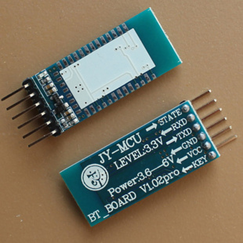

Embedd GUI
Documentation: | INFO.js | pdf | Single HTML | Org-Mode |
Project Links: | SVN Repository | RCOS Observatory | Prebuilt Debian Images | Olimex Forum Post |
This documentation is written under the GNU Free Documentation License.
Table of Contents
- Overview
- RCOS Presentations and Multimedia
- Hardware
- Getting Started
- Quick Reference
- HOWTO
- Simple Sample Programs
- GNU Free Documentation License
Overview
A note from the Author
This documentation is written under the GNU Free Documentation License. The SVN repository with the source code for this project can be found here. This documentation is viewable as an html info file, a single html file, a pdf, and in its original org-mode format. This project would not be possible without funding from the Rensselaer Center for Open Source. The RCOS Observatory Project page can be found here.
I would like to extend a special thanks to:
- Sean O' Sullivan
- Professor Goldschmidt, Ph.D
- Professor Krishnamoorthy, Ph.D
- Timothy Cantwell
- Jorel Lalicki
- RCOS Members for their continued support
Happy Hacking! :)
Nick Guthrie
License
Copyright (c) 2013 Nicholas Guthrie. Permission is granted to copy, distribute and/or modify this document under the terms of the GNU Free Documentation License, Version 1.3 or any later version published by the Free Software Foundation; with no Invariant Sections, no Front-Cover Texts, and no Back-Cover Texts. A copy of the license is included in the section entitled "GNU Free Documentation License".
Primary Objective
- The goal of this project is to give users the ability to install Qt Embedded on an open source hardware system to allow for cheap, fast prototyping of graphical user interfaces.
Background
We live in a world surrounded by computers - from our (arguably excessive) coffee machines to our cell phones and cars, microcomputers play an integral role in our everyday lives. With the cost of electronics rapidly decreasing, and touchscreens becoming commonplace even on low cost consumer products, a unique need has arisen for a unified way of creating user interfaces on embedded devices.
Why we need it
It is easy for small companies and hobbyists to prototype microcontroller based products, such as environmental sensors and other equipment. However, user interface design is generally left at basic pushbuttons and potentiometers, with at most a simple text display on a serial LCD. The barrier to entry into high end touchscreen interfaces is high: it often involves more development/work than the device itself, and there exist few unified solutions for multi-processor and display targeted builds. The few solutions that do exist are prohibitively expensive: For example, a license of Segger EmWin costs $12,300… per target architecture/CPU! Embedd GUI aims to be a “drop in” interface for embedded developers to rapidly incorporate touchscreens into projects.
How/Technologies - Qt Embedded

- "Qt for Embedded Linux is a C++ framework for GUI and application development for embedded devices."
- "Qt for Embedded Linux applications write directly to the framebuffer, eliminating the need for the X Window System and saving memory."
- Qt Embedded allows us to run graphical interfaces without the heavy weight of running an entire graphical desktop.
- Features
- Pointer Handling
- Character Input
- Display Management
- Hardware Accelerated Graphics
- Fonts
- Links
RCOS Presentations and Multimedia
RCOS Summer 2013 - Final Presentation
Prototype Lightswitch GUI Videos
A13 OlinuXino 4.3" Touchscreen Qt Embedded Demo
- Video Here is a demonstration of Qt Embedded touchscreen running the raycasting demo and the styledemo.
RCOS Summer 2013 - Meeting 7 - Open Source Spectrometer + Embedded GUI
A13-OLinuXino-MICRO Qt Embedded Fluidlauncher Video
RCOS Summer 2013 - Initial Presentation
Hardware
Actual
A13-OlinuXino

- Overview
A13-OLinuXino is a low-cost single-board Linux computer in a very compact nano-ITX form. It uses the very first Cortex A8 processor available in eLQFP176 package, produced by Allwinner Technology Inc A13.
- Features
- A13 Cortex A8 processor at 1GHz, 3D Mali400 GPU
- 512 MB RAM (2 x 256Mbit x 8)
- 6-16VDC input power supply, noise immune design
- 3 + 1 USB hosts, 3 available for users, 1 leads to onboard pinout
- 1 USB OTG which can power the board
- SD-card connector for booting optional Linux image
- VGA video output
- Battery option and connector
- LCD signals available on connector so you still can use LCD if you diasble VGA/HDMI
- Microphone input
- 4 Mount holes
- RTC PCF8536 on board for real time clock and alarms
- 5 Keys on board for android navigation
- UEXT connectorfor connecting addtional UEXT modules like Zigbee, Bluetooth, Relays, etc
- GPIO connector with 68/74 pins and these signals:
- 17 for adding NAND flash;
- 22 for connecting LCDs;
- 20+4 including 8 GPIOs which can be input, output, interrupt sources;
- 3x I2C;
- 2x UARTs;
- SDIO2 for connectinf SDcards and modules;
- 5 system pins: +5V, +3.3V, GND, RESET, NMI
- Dimensions: 120 x 120 mm (4.7x4.7'')
- Optional low-cost 7" LCD with touchscreen
- Links
- Retailers
- Datasheets
- Hardware
- Software
- Community
- OLinuXino forum for discussion and community support
- Freenode #olimex irc channel for OLinuXino development discussions
- Retailers
- Extracted CPU Info
Processor ARMv7 Processor rev 2 (v7l) BogoMIPS 1001.88 Features swp half thumb fastmult vfp edsp neon vfpv3 CPU implementer 0x41 CPU architecture 7 CPU variant 0x3 CPU part 0xc08 CPU revision 2 Hardware sun5i Revision 0000 Serial 0000000000000000 - Derived From:
cat /proc/cpuinfo
- Derived From:
USB Wireless LAN Module

- Overview
- The MOD-WIFI-RTL8188 is a USB WiFi module that is supported by the A13-OLinuXino and A13-OLinuXino-MICRO boards.
- It uses the same WiFi board that comes as standard on the A13-OLinuXino-WIFI.
- The WM-294 WiFi board on this module contains the popular RealTek RTL8188CUS single-chip Wireless LAN adapter. There are drivers available for Windows, Linux/Android and Mac, so you aren't limited only to using this module on an A13-OLinuXino board.
- Features
- Has WM-294 module with RTL8188CUS, IEEE 802.11b/g/n
- Operates in 2.4 GHz frequency bands
- 1x1 MIMO technology improves effective throughput and range over existing 802.11 b/g products
- Data rates up to 150Mbps
- 802.11e-compatible bursting and i standards
- BPSK, QPSK, 16 QAM, 64 QAM modulation schemes
- WEP, TKIP, AES, WPA, and WPA2 hardware encryption schemes
- Standard USB type A connector
- On-board antenna
- 5V/3.3V operation modes via SMD jumper (5V by default)
- 4 test pads for easy tracking of the supply, d-, d+, and GND
- PCB: FR-4, 1.00 mm (0.039"), solder mask, silkscreen component print
- Dimensions: 65.15 × 20.38 mm (2.56 × 0.80")
- Links
- Retailers
- Retailers
4.3-inch LCD for A13 OLinuXino, 480x272, with Touch Screen


- Overview
- This is a 4.3-inch LCD with a resistive touch screen and an interface board that has been tested to work with A13 OLinuXino boards.
- It connects to your A13 OLinuXino board by a 2×20-pin connector.
- The display board and the OLinuXino board both have male box headers, so you will need a 40-pin IDC ribbon cable which is sold separately.
- Features
- TFT Panel
- Bo Lymin BT043DCNNHHp$ 4.3-inch (480×272) a-Si color TFT-LCD with white LED / CCFL backlight
- 262K colors
- Anti-glare surface
- Resistive touchscreen panel
- 40-pin connector for connection to A13-OLinuXino boards
- 3.3V single power input with built-in power supply circuit
- LCD Controller
- MCU interface: 8/9/16/18-bit 80/68 series MCU interface
- Display RAM size: 640×240×3×6 bits, e.g. 320×240 two-frame buffer with 262K colors
- Arbitrary display memory start position selection
- 8-bit / 16-bit interface: supports 65K (R5G6B5) / 262K (R6G6B6) color data format
- 9-bit / 18-bit interface: supports 262K (R6G6B6) color data format
- TFT Panel
- Interface Board View
- Note: The A13-OLinuXino boards come with an Android image set up for using a VGA display.
- To use this LCD, you'll need to upload a new image with the appropriate settings.
- A ready-made image (as well as the default VGA image so you can switch back) is available on the A13 OLinuXino Wiki Page (they are intended for 7-inch displays, so be sure also to get the A13-LCD43 script, which adjusts the resolution for this display size).
- Links
- Retailers
- Datasheets
- Demonstrations
- Retailers
JY-MCU Bluetooth Board V1.02

- Specifications
- This shield have extract the VCC、GND、TXD、RXD of the bluetooth.
- (TXD、RXD are both 3.3V)
- This shield has LED indication light.
- Input Voltage ： 3.3V-6V
- Size : 15.5mm*39.8mm
- This shield have extract the VCC、GND、TXD、RXD of the bluetooth.
- Features
- This module power supply input is 3.6 ~ 6V, please be careful that it should be not more than 7V.
- compatible with master mode、slave mode and both master-slave mode
- This module include key interface and state interface compared with Smart Bluetooth Module Baseboard.
- The key interface on the baseboard is the master mode button and can be controlled by high level from external MCU, then this module will search again automatically.
- The STATE interface on the baseboard is interface for LED STATE output feet, when bluetooth module don't not connected with other device and then output pulse, when bluetooth module connected with other device and then output high level, and the MCU will judge the state, then this module will search again automatically.
Testing
A13-OLinuXino-MICRO (No Touchscreen Support)

- Features
- A13 Cortex A8 processor at 1GHz, 3D Mali400 GPU
- 256 MB RAM (128Mbit x 16)
- 5VDC input power supply with own ICs, noise immune design
- 1 USB host
- 1 USB OTG which can power the board
- SD-card connector for booting the Linux image
- VGA video output
- LCD signals available on connector so you still can use LCD if you diasble VGA/HDMI
- Audio output
- Microphone input pads (no connector)
- 1 User key
- 4 Mount holes
- UEXT connectorfor connecting addtional UEXT modules like Zigbee, Bluetooth, Relays, etc
- GPIO connector with 68/74 pins and these signals:
- 17 for adding NAND flash;
- 22 for connecting LCDs;
- 20+4 including 8 GPIOs which can be input, output, interrupt sources;
- 3x I2C;
- 2x UARTs;
- SDIO2 for connectinf SDcards and modules;
- 5 system pins: +5V, +3.3V, GND, RESET, NMI
- Dimensions: 100 x 85 mm (3.950x3.350'')
- Optional low-cost 7" LCD with touchscreen
- FAQ
- There is only 1 USB host on the board, how can I connect simultaneously my USB mouse and USB keyboard?
- You should use external USB hub.
- What software is available for the board?
- The software development changes very rapidly. So far we have reports for number of Linux distributions working properly with the MICRO, please visit the WIKI and the GitHub pages of A13-OLinuXino-MICRO to find suitable distributions;additionally you might want to check on the forum for additional help
- I bought A13-LCD7-TS but when I connect it to the A13-OLinuXino-MICRO I receive no image on the display. What do I do wrong?
- The default A13-OLinuXino-MICRO image is set for a VGA display and resolution. To use LCD with A13-OLinuXino-MICRO you need to upload new image with the appropriate settings.
- The download links for the images may be found in the wiki article for A13-OLinuXino.
- What is the operating temperature range of A13-OLinuXino?
- The board works in the commercial temeprature range 0+70C
- Where can I find the Android image for the A13-OLinuXino-MICRO?
- At the moment we haven't tested Android booting from SD card. Android from SD card is currently not officially supported. However note that there are people reporting success getting it to run - head to the Olimex forums for more recent info.
- There is only 1 USB host on the board, how can I connect simultaneously my USB mouse and USB keyboard?
- Links
- General
- https://github.com/OLIMEX/OLINUXINO
- https://www.olimex.com/Products/OLinuXino/A13/A13-OLinuXino-MICRO/
- http://linux-sunxi.org/Main_Page - for discussion and community support
- https://www.olimex.com/forum/ - for OLinuXino development discussions
- General
- Extrated CPU Info
Processor ARMv7 Processor rev 2 (v7l) BogoMIPS 1001.88 Features swp half thumb fastmult vfp edsp neon vfpv3 CPU implementer 0x41 CPU architecture 7 CPU variant 0x3 CPU part 0xc08 CPU revision 2 Hardware sun5i Revision 0000 Serial 0000000000000000 - Derived From:
cat /proc/cpuinfo
- Derived From:
- Research on Touchscreen Support
- Problem Overview
- Problem with the A13 Micro: All debian images are built for 512 MB of RAM, 256 is all that is available
- Research
- Xman Conversation {Link}
- <xman> hi, What happens if my dram_size = 512 in [dram_para], but my board have only 256MB?
- <WarheadsSE> xman: which board ?
- <xman> https://www.olimex.com/Products/OLinuXino/A13/A13-OLinuXino-MICRO/
- techn_> with 256MB ram you propably need to disable mali, framebuffer and g2d.. memmap hard coded to somewhere 400-500MB
- <techn_> example
- xman> 64M and 32M is for what?
- techn_> 64M mali, 32M for reserved framebuffer(for mali use)
- …
- <WarheadsSE> xman: then you should be enable appropriately adjust the dram para, but you might need an updated uboot that has a 256M SPL
- ..
- <WarheadsSE> the Wifi has an AXP, which the Mirco doesn't.
- <WarheadsSE> That's a big difference.
- …
- <xman> so, you edit fex, uptade kernel and update u-boot?
- <WarheadsSE> yes, fex change, kernel source change, u-boot source change
- <WarheadsSE> recompile all.
- ..
- <WarheadsSE> For the moment, they need to use the provided kernel source repository, and the associated uboot.
- Olimex General Conversation {Link}
- In Depth Conversation about Recompiling Kernal from Source {Link}
- Xman Conversation {Link}
- Compile Kernal From Source
- Links
- https://www.olimex.com/forum/index.php?topic=747.msg3558#msg3558
git clone git://github.com/linux-sunxi/u-boot-sunxi.git git clone https://github.com/hehopmajieh/linux-sunxi cd linux-sunxi git checkout origin/sunxi-3.0 make a13_olinuxino_micro CROSS_COMPILE=arm-linux-gnueabi- make ARCH=arm a13om_defconfig make ARCH=arm menuconfig
- https://www.olimex.com/forum/index.php?topic=747.msg3558#msg3558
- Links
- Problem Overview
4.3" LCD Screen
- FPC4034006
- tl-c430ve display
- 4.3" FPC4304006 MP4 MP5 GPS lcd display panel
- Place of Origin: Guangdong, China (Mainland)
- Brand Name: BYD
Getting Started
Overview
This contains complete documentation of all steps taken including solutions to errors I encountered. If you are installing the system from scratch, its probably better to start at the base of the HOWTO. If you want to use a prebuilt image and start writing GUIS:
Copy the prebuilt Debian Image to the Device
- Download A13-OlinuXino Debian Image (here).
- Mount SD Card on Computer
- Copy Image onto SD card
sudo gzip -dc /path/to/nickguthrie-a13-olinuxino-complete-v1.image.gz | dd of=/dev/mmcblk0- WARNING: will overwrite everything on card
- obviously replacing "path/to" with the location of the image on your computer
- "/dev/mmcblk0" should be where you mounted the SD card on your computer
Getting the Development Environment Set Up
- Set up the Cross Compiling Toolchain
- Compile TSLIB from Source on Development Platform
- Compile QT from Source
- Install QT Creator
sudo apt-get install qtcreator
Compiling Programs
- You must first build the makefile using the Qmake compiled in the last step, mine exists in /usr/local/qt/bin/qmake. If I had a program created in qt_creator called my_program:
/usr/local/qt/bin/qmake my_program.pro
- only needs to be done once on the system
- Afterwards, compile the program with:
make clean; make
- If all your path variables are set correctly this will then create a program in the ARM Architechture, which can then be run on the device.
- If you aren't using anything specific to the device (I used some code with the virtual screen, so I can't run on the desktop), you can build it on the host machine just for testing purposes with the regular qmake.
qmake my_program.pro; make clean; make
- of course to run it on the device, you would need to run it with the correct qmake, before building
- Emacs has great support for debugging with Make files (M-x compile) then enter the build commands (make clean; make)
Sending Programs over to the Device
After building the program, it must be sent to the device in order to run
- Set up SFTP
- Connect to the device
sftp root@192.168.12.222
- This is the static IP, so it should work, otherwise check the device IP
- Set the local directory (where the binary is to send)
lcd /home/slaye/Desktop/myprogram/
- Set the directory where you want to send the program
cd ./Desktop
- Connect to the device
- Send the program to the Device
put myprogram
Running a Program
- Plug in the Wireless, and USB Keyboard before booting
- WARNING: not plugging in the keyboard may mess up the settings that tell TSLIB where to look for touchscreen input. Currently a keyboard is always needed, which is why it is configured this way, this can be modified in the TSLIB configuration on the device for more permanent results.
- Plug in Power
- Login:
Username root Password password - Navigate to the Directory
cd ./Desktop/; # go to Desktop cd ..; # go to the previous directory ls; # show the files in the current directory
- Once you are in the dirtory with your program (say, my_program), run it with:
./my_program -qws
- the "-qws" is the command to run the virtual screen
- Killing the Program
since these programs are meant to run "permanently" there is no way to exit from within the program, you can kill the process from another shell to end the program.
- Type Ctrl + Alt + F2 to switch to the second terminal
- Login (Username: root, Password, password)
- Find your process name (aka the CMD)
ps -a
- Kill the Process
killall my_program
- Check the process is dead
ps -a
- the program should be gone
- you can kill it with more power with:
kill -9 my_programOR
kill -9 PID- where you use the PID found with "ps -a"
- Switch back to your other terminal with Ctrl + Alt + F1
Calibrating the Toucscreen
- You can calibrate the toucschreen with:
ts_calibrate
- There are also a few other ts program, such as:
ts_calibrate; ts_harvest; ts_print; ts_print_raw; ts_test;
Contributing to the Documentation
- This documentation is generated with org-mode in Emacs.
- Org-Mode is included by default in Emacs.
- You must add the project to a list, then you compile
- Add this to your ~/.emacs file.
;; ------------------------------------- ;; -- Publish Websites ;; ------------------------------------- (setq org-publish-project-alist '(("embedd-gui" :base-directory "~/svn/embedd-gui/doc/" :publishing-directory "~/svn/embedd-gui/doc/" )))
- obviously changing the based directory where the /doc dir is and the publish to wherever you want to output the results.
- To publish, in Emacs open the embedd-gui/docs/notes.org file, and type: C-u C-c C-e E.
C-u forces all to be published, since it won't recoginize some files have changed due to the way they are linked C-c C-e is the same thing as M-x org-export E the option to export all projects - you should then find the freshly exported documentation in your publish directory
- This will publish in all of the useful export formats, including a javascript file, 2 html files, and pdf. (All linked to at the top).
- The style sheet is a custom css I wrote (nmg.css), which must be included at the root of the directory for it to look pretty.
- you should then find the freshly exported documentation in your publish directory
Quick Reference
Connect to Serial via Bluetooth
Prerequisite: configure rfcomm.conf
- Initialize Connection
sudo rfcomm connect rfcomm2
- Connect with Screen
sudo screen /dev/rfcomm2 115200
- Login
Communicate via SSH
ssh root@192.168.12.200 -p 22122
Connect with SFTP for File Transfer
sftp -P 22122 root@192.168.12.200
- Change Local Directory
lcd /local/directory
- Get File
get <file>
- Send File
put <file>
Send Files via SCP
Overview
scp allows files to be copied to, from, or between different hosts. It uses ssh for data transfer and provides the same authentication and same level of security as ssh.
Examples
- Copy the file "foobar.txt" from a remote host to the local host
scp -P 22122 root@192.168.12.200:foobar.txt /some/local/directory
- Copy the file "foobar.txt" from the local host to a remote host
scp -P 22122 foobar.txt root@192.168.12.200:/some/remote/directory
- Copy the directory "foo" from the local host to a remote host's directory "bar"
scp -P 22122 -r foo root@192.168.12.200:/some/remote/directory/bar
- Copy the file "foobar.txt" from remote host "rh1.edu" to remote host "rh2.edu"
scp -P 22122 your_username@rh1.edu:/some/remote/directory/foobar.txt your_username@rh2.edu:/some/remote/directory/
- Copying the files "foo.txt" and "bar.txt" from the local host to your home directory on the remote host
scp -P 22122 foo.txt bar.txt root@192.168.12.200:~
- Copy the file "foobar.txt" from the local host to a remote host using port 2264
scp -P 22122 -P 2264 foobar.txt root@192.168.12.200:/some/remote/directory
- Copy multiple files from the remote host to your current directory on the local host
scp -P 22122 root@192.168.12.200:/some/remote/directory/\{a,b,c\} . scp -P 22122 root@192.168.12.200:~/\{foo.txt,bar.txt\} .
- Receive and Entire Directory
scp -r root@192.168.12.222:/root/Desktop/src/tslib tslib_v2
Check Remaining Space on Hard Drive
du -h <path_of_the_dir> | tail -1
Sync Files with rsync
Sync a Directory From Host To Device
/ will not modify host directory /
rsync -rtvz -e "ssh -p 22122" /home/slayer/Desktop/foo/ root@192.168.12.200:/root/Desktop/foo/
Building Projects with Qmake
- Build Project
/usr/local/bin/qmake project.pro make clean make
- Send binary files over to device (either with rsync, scp, or sftp)
- Run program
Backups
Backup the SD Card
- Navigate to backup directoryhttp://raspberrypi.stackexchange.com/questions/311/how-do-i-backup-my-raspberry-pi
cd BAK/ - connect card to linux, unmounted
- copy card contents with dd
sudo dd if=/dev/mmcblk0 | gzip > ./debian_configured_v1.image.gz
Restore the SD Card
- insert unmounted card
- unzip to card
sudo gzip -dc /path/to/debian_configured_v1.image.gz | dd of=/dev/mmcblk0
Backup Data to Web Storage
rsync -rtvz --progress /media/Global/Global/BAK/embedd_gui/bin nickguthrie.com:nickguthrie.com/embedd_gui/bin
Links
- How do I make a Backup of my Rasberry Pi {Link}
- Make a full backup of the image
- If you are running linux then you can use the dd command to make a full backup of the image:
dd if=/dev/sdx of=/path/to/image
- or for compression:
dd if=/dev/sdx | gzip > /path/to/image.gz - Where sdx is your SD card.
- If you are running linux then you can use the dd command to make a full backup of the image:
- To restore the backup you reverse the commands:
- Uncompressed
dd if=/path/to/image of=/dev/sdx
- or when compressed:
gzip -dc /path/to/image.gz | dd of=/dev/sdx
- Uncompressed
- Make a full backup of the image
HOWTO
Obtain Hardware
The hardware used in this guide:
Copy Debian Image to SD Card
Overview
- I am installing a Debian Image found here.
Steps
- Download Debian Image
- Unrar Debian Image
unrar e A13_debian_WIFI_GCC_GPIO_IN_OUT_AUTO_load_withoutX_I2C_100KHz_UVC_Python_OpenCV_fifth_release.rar
- Copy img file to card
dd bs=4M oflag=sync if=A13_Micro_Debian_1GHz_GPIO_100kHz_I2C_WIFI_USB_LAN_without_X_and_touch_first_release.img of=/dev/mmcblk0
- WARNING: will overwrite everything on card
Configure Touchscreen (script.bin)
Overview
- The script.bin will determine what display can be used.
- There are different configurations for different displays when you use Linux because the dot pitch is different.
Steps
- Create LCD script directory
mkdir scripts; cd scripts; - Download VGA_LCD_scripts_A13.zip
- Extract the folders
unzip VGA_LCD_scripts_A13.zip
- Mount 17 MB Fat32 Partition to Computer
- Backup script.bin on device
cd /media/mmcblk0 cp script.bin script.bin.BAK - Copy correct script.bin to Device
cp scripts/script_GPIO_LCD_480x272/script.bin /media/mmcblk0
Modifying the script.bin file (Optional)
Overview
- The bin2fex and fex2bin program supplied by Olimex can be used to convert the script.bin binary file to a readable/editable text file, which can then be modified and converted back into a script.bin binary file.
Installation
- extract A13 tar file
cd bin/ tar -zxvf fex2bin_bin_fex_tools.tar.gz - install libusb
sudo apt-get install libusb-1.0-0-dev
- Build Files
make clean make -k
General Usage
- Using bin2fex
- First, get hold of the script.bin file located in the boot loader partition (do this by mounting either the RFSFAT16_BOOTLOADER_00000 from Livesuit, or the actual partition image from the tablet). Place it on the Desktop of your Ubuntu machine. Then, from a terminal on the Desktop, run:
# ./bin2fex script.bin script.fex ../bin/A13_script_files/fex2bin_bin_fex_tools/bin2fex script.bin script.fex
- This converts the script.bin file into script.fex. Here's the output produced - script.fex.
- First, get hold of the script.bin file located in the boot loader partition (do this by mounting either the RFSFAT16_BOOTLOADER_00000 from Livesuit, or the actual partition image from the tablet). Place it on the Desktop of your Ubuntu machine. Then, from a terminal on the Desktop, run:
- Using fex2bin
- To convert back, it's simply the reverse:
# ./fex2bin script.fex script.bin ../bin/A13_script_files/fex2bin_bin_fex_tools/fex2bin script.fex script.bin
- This can then be placed back on the bootloader partition (remember to also overwrite script0.bin).
- To convert back, it's simply the reverse:
Errors
- INIT: cannot execute "/sbin/getty"
- Description
- During boot, serial connaction outputs error:
INIT: cannot execute "/sbin/getty"
- During boot, serial connaction outputs error:
- Probable Cause
- The util-linux is not installed
- Description
Links
- Configuration of hardware in the debian image {Link}
- Tools
- Script file
- The script.bin is a text file with very important configuration parameters like port GPIO assignments, DDR memory parameters, Video resolution etc, by changing these parameters in the script.bin you can configure your Linux without need to re-compile your kernel again and again this is smart way Allwinner provides for tweaking A13 Linux Kernel
- fex
- The fex tool will convert a script.bin file to a text file and back again.
- This allows the easy modification of the settings that are in the script.bin file
- Tools and script files
- A13 script bin and fex tool
- The directory A13_script_files contains:
- script.bin
- the default script with VGA800x600settings
- fex2bin_bin_fex_tools.tar.gz
- tools fex2bin and bin2fex for converting the *.bin script file to *.fex(text file)
- script_GPIO_VGA
- script with VGA800x600settings
- script_GPIO_LCD_800x480
- script with LCD800x480settings
- Script file
- Changing A13-OLinuxino settings to VGA800x600 or LCD800x480
- The default SD card setup is made with settings for VGA 800x600. If you want to switch between VGA 800x600 and LCD800x480 mode then you have to replace the existing script.bin file from the first SD card partitition (note that this partition is FAT - so you can replace the file under Windows or Linux) with the script.bin file from script_GPIO_VGA directory (if you want to change to VGA800x600 mode) or from script_GPIO_LCD_800x480 directory (if you want to change to LCD800x600 mode).
- Establish WIFI connection
- plug in MOD-WIFI-RTL8188 if the board is not A13-OLinuXino-WIFI
type ifconfig -a- Output
lo Link encap:Local Loopback inet addr:127.0.0.1 Mask:255.0.0.0 UP LOOPBACK RUNNING MTU:16436 Metric:1 RX packets:0 errors:0 dropped:0 overruns:0 frame:0 TX packets:0 errors:0 dropped:0 overruns:0 carrier:0 collisions:0 txqueuelen:0 RX bytes:0 (0.0 B) TX bytes:0 (0.0 B) tunl0 Link encap:IPIP Tunnel HWaddr NOARP MTU:1480 Metric:1 RX packets:0 errors:0 dropped:0 overruns:0 frame:0 TX packets:0 errors:0 dropped:0 overruns:0 carrier:0 collisions:0 txqueuelen:0 RX bytes:0 (0.0 B) TX bytes:0 (0.0 B) wlan2 Link encap:Ethernet HWaddr 48:02:2a:eb:21:1c inet addr:192.168.0.229 Bcast:192.168.0.255 Mask:255.255.255.0 UP BROADCAST RUNNING MULTICAST MTU:1500 Metric:1 RX packets:166 errors:0 dropped:726 overruns:0 frame:0 TX packets:7 errors:0 dropped:0 overruns:0 carrier:0 collisions:0 txqueuelen:1000 RX bytes:31361 (30.6 KiB) TX bytes:1248 (1.2 KiB)- and look at your wlan number. In this case we have wlan2
- Output
- open the file /etc/network/interfaces- for example using vi tool
vi /etc/network/interfaces
- and change
auto wlan2 iface wlan2 inet dhcp wpa-ssid YourSSIDname wpa-psk YourWPAkey reboot A13-OLinuXino board
- Chek your connection
ifconfig -a
- if everything is ok you should see something as:
wlan1 Link encap:Ethernet HWaddr 48:02:2a:eb:21:1c inet addr:192.168.0.229 Bcast:192.168.0.255 Mask:255.255.255.0 UP BROADCAST RUNNING MULTICAST MTU:1500 Metric:1 RX packets:166 errors:0 dropped:726 overruns:0 frame:0 TX packets:7 errors:0 dropped:0 overruns:0 carrier:0 collisions:0 txqueuelen:1000 RX bytes:31361 (30.6 KiB) TX bytes:1248 (1.2 KiB)
- if everything is ok you should see something as:
- and change
- plug in MOD-WIFI-RTL8188 if the board is not A13-OLinuXino-WIFI
- Establish ethernet connection using USB-ETHERNET adapter recommended supported adapter USB-ETHERNET-AX88772B
- plug in USB-ETHERNET-AX88772B adapter
- type
ifconfig -a
- you should see something like this
eth1 Link encap:Ethernet HWaddr 00:80:80:9a:4a:63 inet addr:192.168.0.113 Bcast:192.168.0.255 Mask:255.255.255.0 UP BROADCAST RUNNING MULTICAST MTU:1500 Metric:1 RX packets:58 errors:0 dropped:0 overruns:0 frame:0 TX packets:4 errors:0 dropped:0 overruns:0 carrier:0 collisions:0 txqueuelen:1000 RX bytes:7852 (7.6 KiB) TX bytes:510 (510.0 B) lo Link encap:Local Loopback inet addr:127.0.0.1 Mask:255.0.0.0 UP LOOPBACK RUNNING MTU:16436 Metric:1 RX packets:0 errors:0 dropped:0 overruns:0 frame:0 TX packets:0 errors:0 dropped:0 overruns:0 carrier:0 collisions:0 txqueuelen:0 RX bytes:0 (0.0 B) TX bytes:0 (0.0 B) tunl0 Link encap:IPIP Tunnel HWaddr NOARP MTU:1480 Metric:1 RX packets:0 errors:0 dropped:0 overruns:0 frame:0 TX packets:0 errors:0 dropped:0 overruns:0 carrier:0 collisions:0 txqueuelen:0 RX bytes:0 (0.0 B) TX bytes:0 (0.0 B)- look at your eth number. In this case we have eth1
- you should see something like this
- open the file /etc/network/interfaces- for example using vi tool
vi /etc/network/interfaces
- and change the following rows
auto eth1 iface eth1 inet dhcp where eth1 is the interface number reboot A13-OLinuXino board
- or type ifup eth1
- and change the following rows
- Check your connection
ifconfig -a
- if everything is ok you should see something as:
eth1 Link encap:Ethernet HWaddr 00:80:80:9a:4a:63 inet addr:192.168.0.113 Bcast:192.168.0.255 Mask:255.255.255.0 UP BROADCAST RUNNING MULTICAST MTU:1500 Metric:1 RX packets:725 errors:0 dropped:0 overruns:0 frame:0 TX packets:10 errors:0 dropped:0 overruns:0 carrier:0 collisions:0 txqueuelen:1000 RX bytes:77056 (75.2 KiB) TX bytes:1686 (1.6 KiB)
- if everything is ok you should see something as:
- GPIO changing
- lsmod
type lsmod- if sun4i-gpio is present - OK
- unless type modprobe sun4i-gpio
- go to /sys/devices/virtual/misc/sun4i-gpio/pins and type ls
- list of supported pins will be shown
- example for port reading:
cat pe4 read PortE4 the result should be 0 or 1 example for port writing: echo 1 > pg9 - turn on LED
- Changing A13 GPIO direction
- extract fex2bin_bin2fex_tools on linux machine
sudo su cd fex2bin_bin2fex_tools directory mount /dev/sdx1 /mnt/sd # mount first partitition on SD card ./bin2fex /mnt/sd/script.bin > /mnt/sd/script_test.fex # convert bin file to fex gedit /mnt/sd/script_test.fex
- extract fex2bin_bin2fex_tools on linux machine
- GPIOs are defined in the end.
- where
Pxx<mode><pull><drive><data> mode 0-7, 0=input, 1=ouput, 2-7 I/O function pull 0=none, 1=up, 2=down drive 0-3, I/O drive level data - data output - logical 0 or 1
- for example: if you want to change GPIO direction then change first parameter after port name
gpio_pin_8 = port:PE08<0><default><default><default>make PE8 input gpio_pin_8 = port:PE08<1><default><default><default>make PE8 output
- save and exit
- ./fex2bin /mnt/sd/script_test.fex > /mnt/sd/script.bin- convert fex to bin
- where
- lsmod
- Tools
- fex2bin and bin2fex - script.bin {Link}
- Overview
- During the boot process, the processor reads a file called script.bin, located in the bootloader (nanda) partition. This file contains all of the processor configuration details (such as pin functions, voltages, clock frequencies, memory configuration etc) and is essential to the correct operation of the tablet. The purpose of this file should be distinguished from that of build.prop, located in /system/build.prop. The latter is a configuration for Android, once it's started. script.bin is configuration for the processor.
- Note that there is also a file in the bootloader partition called script0.bin - this is a backup and must be identical to script.bin.
- For more information on the boot process and the function of script.bin, have a look at these links:
- http://rhombus-tech.net/allwinner_a10/a10_boot_process/
- http://elinux.org/Hack_A10_devices
- http://www.cnx-software.com/2012/05/06/editing-allwinner-a10-board-configuration-files-script-bin/
- http://linux-sunxi.org/Sunxi-tools
- The second link above shows a really neat trick where the pins normally intended for interfacing with the SD card are remapped to a UART port, so you can get a serial port by connecting to the SD card slot!
- The script.bin file is actually the binary equivalent of the COMMON_SYS_CONFIG100000 file found in the unpacked Livesuit image. The human-readable version is called a "FEX" file, since that's the extension used by some conversion programs. There are a couple of tools available which can convert between the binary and FEX formats, and these are described below. This - http://linux-sunxi.org/Fex_Guide - is a description of the sections in the FEX file.
- (There is an online version of these tools available at https://www.miniand.com/tools/fexc, but I couldn't get it to work.)
- Installation
- To get the tools, go to the git repository at https://github.com/linux-sunxi/sunxi-tools/ and download the ZIP file (called sunxi-tools-master.zip). Extract this, and place the folder on the Desktop of your Linux machine. Open a terminal, cd to the folder, then run
sudo apt-get install libusb-1.0-0-dev
- (this installs libusb, which is required for compilation). Then type make which should compile the files. This creates two programs (actually it creates a lot more, but these are the only two we're interested in) called bin2fex and fex2bin.
- To get the tools, go to the git repository at https://github.com/linux-sunxi/sunxi-tools/ and download the ZIP file (called sunxi-tools-master.zip). Extract this, and place the folder on the Desktop of your Linux machine. Open a terminal, cd to the folder, then run
- Using bin2fex
- First, get hold of the script.bin file located in the boot loader partition (do this by mounting either the RFSFAT16_BOOTLOADER_00000 from Livesuit, or the actual partition image from the tablet). Place it on the Desktop of your Ubuntu machine. Then, from a terminal on the Desktop, run:
sunxi-tools-master/bin2fex script.bin script.fex
- This converts the script.bin file into script.fex. Here's the output produced - script.fex.
- First, get hold of the script.bin file located in the boot loader partition (do this by mounting either the RFSFAT16_BOOTLOADER_00000 from Livesuit, or the actual partition image from the tablet). Place it on the Desktop of your Ubuntu machine. Then, from a terminal on the Desktop, run:
- Using fex2bin
- To convert back, it's simply the reverse:
sunxi-tools-master/fex2bin script.fex script.bin
- This can then be placed back on the bootloader partition (remember to also overwrite script0.bin).
- To convert back, it's simply the reverse:
- Using fex2bin on the COMMON_SYS_CONFIG100000 LiveSuit file
- You can use fex2bin to convert the COMMON_SYS_CONFIG100000 file from the unpacked LiveSuit image into a script.bin file. However, I initially got an error saying "E: CONFIG:696: invalid character at 27" or similar (which means line 696, character 27). Looking at the file, it turned out there were quotes missing at a certain point. Here's the original part of the file:
[msc_feature] vendor_name =USB 2.0 product_name =USB Flash Driver To get it to convert properly, I put quotes as follows: [msc_feature] vendor_name ="USB 2.0" product_name ="USB Flash Driver"
- I'm not sure why quotes were missed out here, since they're present everywhere else.
- You can use fex2bin to convert the COMMON_SYS_CONFIG100000 file from the unpacked LiveSuit image into a script.bin file. However, I initially got an error saying "E: CONFIG:696: invalid character at 27" or similar (which means line 696, character 27). Looking at the file, it turned out there were quotes missing at a certain point. Here's the original part of the file:
- Which version ends up on the tablet?
- If you're eagle-eyed, you may notice something at this point. In the unpacked LiveSuit files, there are essentially two copies of script.bin. One is the human-readable COMMON_SYS_CONFIG100000 file, the other is the script.bin located within the RFSFAT16_BOOTLOADER_00000 image file. The two copies are identical (if you use fex2bin/bin2fex to convert between them, and remember the quotation marks). So, which one actually ends up on the tablet?
- I made a slight modification to one, then the other, packing and burning a complete LiveSuit image each time, and determined that it's the script.bin inside RFSFAT16_BOOTLOADER_00000 which ends up on the tablet (hardly surprising, since RFSFAT16_BOOTLOADER_00000 is a byte-for-byte copy of the nanda tablet partition). To be on the safe side, I would still ensure that COMMON_SYS_CONFIG100000 is identical to the script.bin file - maybe LiveSuit uses COMMON_SYS_CONFIG100000 for its own initial configuration, or something.
- Overview
- imx233-olinuxino-with-lcd-4-3-and-touchscreen {Link}
- Product Info {Link}
- Changing A13-OLinuxino settings to VGA800x600 or LCD800x480 {Link}
- (As of 1 March 2013, the current Debian build for this MICRO version does not yet support a touch panel.)
Configure Debian
Configure Wireless (Dynamic IP Address)
- Steps
- Determine Wireless Device
dmesg
- Found as wlan3
- Configure /etc/network/interfaces as Root
auto wlan3 iface wlan3 inet dhcp wpa-ssid TVCOG wpa-psk COGpass1
- Restart the Networking Service
service networking restart
- Test the Network
ifconfig ping google.com
- Determine Wireless Device
Configure Static IP Address
- Steps
- Determine Information
ifconfig
- Find:
- address
- netmask
- gateway
- DNS Servers
- Find:
- Modify /etc/network/interfaces as Root
auto wlan3 iface wlan3 inet static wpa-ssid TVCOG wpa-psk COGpass1 address 192.168.12.222 netmask 255.255.255.0 gateway 192.168.12.1
- Modify /etc/resolv.conf as Root
domain techvalleycenterofgravity.com search techvalleycenterofgravity.com nameserver 64.22.32.8 nameserver 64.22.32.9
- Restart Networking as Root
/etc/init.d/networking restart
- Test Results
ifconfig ping google.com
- Determine Information
Set Date
- Steps
date --set="10 JUL 2013 12:27:00"
Set Keyboard Locale
- Overview
- My keyboard layout was set to UK, which meant I typed things like ¬ instead of ~ and £ instead of #.
- This can easily be remidied from the commandline.
- Steps
- Modify the keyboard locale
sudo dpkg-reconfigure keyboard-configuration
- reboot
reboot -h now
- Modify the keyboard locale
Install Programs
- Steps
- update packages
apt-get update; apt-get upgrade; apt-get dist-upgrade
- install packages
apt-get install aptitude emacs build-essentials pkg-config
- emacs is obviously "optional" but is the preferred text-editor of choice for real programmers ;)
- update packages
Configure SSH to start on Boot
- Steps
- Install ssh server
apt-get install openssh-server
- Create or modify the /etc/init.d/sshd init script as follows:
#! /bin/sh # # start/stop the secure shell daemon case "$1" in 'start') # Start the ssh daemon if [ -x /usr/sbin/sshd ]; then echo "starting SSHD daemon" /usr/sbin/sshd & fi ;; 'stop') # Stop the ssh daemon /usr/bin/pkill -x sshd ;; *) echo "usage: /etc/init.d/sshd {start|stop}" ;;
- Check that /etc/rc3.d/S89sshd exists (or any sshd startup script exists) and is a soft link to /etc/init.d/sshd.
- If not, create it using the following command:
ln -s /etc/init.d/sshd /etc/rc3.d/S89sshd
- If not, create it using the following command:
- Determine that ssh is running
service ssh status
- Determine Port Open
netstat -tlpn
- Port is: 22122
- Determine IP Address to connect to
ifconfig
- Connect to ssh
ssh root@192.168.12.128 -p 22122
- Install ssh server
- Debugging
- Check ports being listened on
netstat -an | grep "LISTEN"
- Check ports being listened on
Install XFCE (Optional)
- Overview
- Most of this guide is dedicated to setting up this micro-controller to run QT Embedded, which allows the use of graphical programs without runnng a graphical desktop (XFCE). That being said it is possible to install one, I haven't worked on getting touchscreen support working with it, but Olimex has posted a few tutorials and it does work fine with a mouse.
- Steps
apt-get install --no-install-recommends xorg xfce4 alsa-base alsa-utils; apt-get install --no-install-recommends cpufrequtils gamin xdg-utils; apt-get install --no-install-recommends desktop-base gnome-icon-theme dmz-cursor-theme; apt-get install --no-install-recommends xfce4-terminal xfce4-power-manager xfce4-screenshooter; startx;
- Links
- Installing GUI
http://lcncolinuxino.blogspot.com/p/installing-gui.html- Overview
Optionally if desired, a GUI user interface can be installed. This section describes how to install a small foot print xfce4 user interface.
- Steps
apt-get install --no-install-recommends xorg xfce4 alsa-base alsa-utils; apt-get install --no-install-recommends cpufrequtils gamin xdg-utils; apt-get install --no-install-recommends desktop-base gnome-icon-theme dmz-cursor-theme; apt-get install --no-install-recommends xfce4-terminal xfce4-power-manager xfce4-screenshooter; apt-get install --no-install-recommends thunar-archive-plugin thunar-media-tags-plugin; apt-get install --no-install-recommends xfburn htop squeeze bzip2 zip unzip unrar-free; # Finally start the user interface with: startx;
- Links
- Overview
- Installing GUI
Configure Serial Communication with Bluetooth Module
Communicate to Bluetooth
- Connecting
- Installation
- Connect to Linvar
Passphrase: 1234
- Configure /etc/bluetooth/rfcomm.conf
# # RFCOMM configuration file. # rfcomm0 { # Automatically bind the device at startup bind no; # Bluetooth address of the device device 00:12:03:27:71:07; # RFCOMM channel for the connection channel 1; # Description of the connection comment "Example Bluetooth device"; }
- Restart Bluetooth
service bluetooth restart
- Determine the Hardware Address
The hardware address should be replaced with that of your phone. If you don't know the hardware address of your phone yet, you can get it by running:
- Bind the Address
sudo rfcomm bind 0 00:12:03:27:71:07
- Connect to Linvar
- Links
Get Serial Over Linux
- Installation
- Determine hardware a
- Modify /etc/bluetooth/rfcomm.conf as Root
rfcomm2 { # Automatically bind the device at startup bind no; # Bluetooth address of the device device 00:12:03:27:71:07; # RFCOMM channel for the connection channel 1; # Description of the connection comment "Olimex"; }
- Restart Bluetooth
sudo service bluetooth restart
- Determine hardware a
- Connecting
- Initialize Connection
sudo rfcomm connect rfcomm2
- Connect with Screen
screen /dev/rfcomm2 115200
- Login
- Initialize Connection
Install ARM Toolchain with Buildroot
Steps
- Download Buildroot
mkdir bld; cd bld wget http://buildroot.net/downloads/buildroot-2013.05.tar.gz tar -xvf buildroot-2013.05.tar.gz cd buildroot-2013.05
- Run Menu Config
make menuconfig
- Relevant Configurations:
Target Architecture ARM (little endian) Target Architecture Variant Cortex-A8 Toolchain Sourcery Codebench ARM 2011.09
- Relevant Configurations:
- If you are on a 64-bit system
sudo apt-get install ia32-libs
- See Error
- Install toolchain binaries
su cp -a ext-toolchain /opt/ext_toolchain cp /etc/environment /etc/environment.BAK
- Append :/opt/ext_toolchain/bin/ to Path
PATH="/usr/local/sbin:/usr/local/bin:/usr/sbin:/usr/bin:/sbin:/bin:/usr/games:/usr/local/games:/opt/ext_toolchain/bin/"
- Append :/opt/ext_toolchain/bin/ to Path
- Logout and Login or Reboot
- Buildroot Toolchain Error: "error while loading shared libraries: libstdc++.so.6"
- Error:
- error while loading shared libraries: libstdc++.so.6: cannot open shared object file: No such file or directory
- Probable Cause
- Its looking for 32-bit library, which is not installed since I have a 64-bit system
- Solution
- Install the 32 bit libraries
sudo apt-get install ia32-libs
- Error:
Links
- Using buildroot for real projects
- This is a great presentation that demonstrates how to use buildroot very clearly.
Configure tslib on Device
Overview
One of the first problems we had with OLinuxIno-A13 board is the touchscreen support. The manual was published on the official Olimex blog, but source packages had updated, so old solution didn't give an effect. After some experiments, we solved this problem. Here is a full step-by-step manual how to get the device works well under Debian
Steps
- Install make and automake
apt-get install make automake
- Download tslib source code and go to its directory:
git clone https://github.com/kergoth/tslib.git cd tslib - Download and apply the patch using GNU patch utility:
wget https://raw.github.com/webconn/OLINUXINO/master/SOFTWARE/A13/TOUCHSCREEN/tslib.patch patch -p0 < tslib.patch
- Configure, make and install:
autoreconf -vi ./configure --prefix=/usr make make install
- Then, let's load a kernel module and check touchscreen:
modprobe sun4i-ts dmesg | grep sun4i-ts
- Result
[12951.630000] sun4i-ts.c: sun4i_ts_init: start ... [12951.640000] sun4i-ts: tp_screen_size is 5 inch. [12951.650000] sun4i-ts: tp_regidity_level is 5. [12951.660000] sun4i-ts: tp_press_threshold_enable is 0. [12951.670000] sun4i-ts: rtp_sensitive_level is 15. [12951.670000] sun4i-ts: rtp_exchange_x_y_flag is 0. [12951.690000] sun4i-ts.c: sun4i_ts_probe: start... [12951.710000] input: sun4i-ts as /devices/platform/sun4i-ts/input/input4 [12951.730000] sun4i-ts.c: sun4i_ts_probe: end
- Result
- To load this kernel module automatically, add a line into /etc/modules:
echo sun4i-ts >> /etc/modules - Export Some Variables
export TSLIB_TSEVENTTYPE=raw export TSLIB_CONSOLEDEVICE=none export TSLIB_FBDEVICE=/dev/fb0 export TSLIB_TSDEVICE=/dev/input/event4 export TSLIB_CALIBFILE=/usr/etc/pointercal export TSLIB_CONFFILE=/usr/etc/ts.conf export TSLIB_PLUGINDIR=/usr/lib/tsg
- Next, configure raw input module of the tslib.
- Open /usr/etc/ts.conf and uncomment the line which contains "module_raw input".
- To load configuration variables while system is loading, write these lines into /etc/environment file (check highlighted number):
TSLIB_TSEVENTTYPE=raw TSLIB_CONSOLEDEVICE=none TSLIB_FBDEVICE=/dev/fb0 TSLIB_TSDEVICE=/dev/input/event3 TSLIB_CALIBFILE=/etc/pointercal TSLIB_CONFFILE=/usr/etc/ts.conf TSLIB_PLUGINDIR=/usr/lib/ts
Errors
- undefined macro: AC_DISABLE_STATIC
- Error Caused
- while attempting to do "autoreconf -vi" when building tslib
- Error Message
configure.ac:24: error: possibly undefined macro: AC_DISABLE_STATIC If this token and others are legitimate, please use m4_pattern_allow. See the Autoconf documentation.
- Solution
apt-get install libtool
- Error Caused
Test tslib Input Received from Touchscreen
cat /dev/input/event3 | hexdump
Configure QT for Embedded Linux
Steps
- Install QT on Development Platform
http://suchakra.wordpress.com/2011/05/17/qt-on-mini2440/sudo apt-get install qtcreator
- Install TSLIB on Development Platform
http://billforums.station51.net/viewtopic.php?f=8&t=15cd ~/src git clone https://github.com/kergoth/tslib.git tslib cd tslib # custom patch for Olinuxino wget https://raw.github.com/webconn/OLINUXINO/master/SOFTWARE/A13/TOUCHSCREEN/tslib.patch patch -p0 < tslib.patch ./autogen.sh ./configure --host=arm-linux-gnueabihf --prefix=/usr/local/tslib --enable-static --enable-shared make -j5 su export PATH=$PATH:opt/ext_toolchain/bin/ make install
- Make sure to modify qmake.conf file when installing qt-embedded by including:
QMAKE_INCDIR += /usr/local/tslib/include QMAKE_LIBDIR += /usr/local/tslib/lib
- Make sure to modify qmake.conf file when installing qt-embedded by including:
- Install qt-everywhere on Development Platform
- Steps
- Install Source
tar -xvf qt-everywhere-opensource-src-4.6.2.tar.gz /usr/local/qt
- Replace the whole text in mkspecs/qws/linux-arm-g++/qmake.conf by the following:
# # qmake configuration for building with arm-linux-g++ # include(../../common/gcc-base-unix.conf) include(../../common/g++-unix.conf) include(../../common/linux.conf) include(../../common/qws.conf) # modifications to g++.conf QMAKE_CC = arm-linux-gnueabihf-gcc -mcpu=cortex-a8 -mtune=cortex-a8 -O0 -mfpu=neon -lrt QMAKE_CXX = arm-linux-gnueabihf-g++ -mcpu=cortex-a8 -mtune=cortex-a8 -O0 -mfpu=neon -lrt QMAKE_LINK = arm-linux-gnueabihf-g++ -mcpu=cortex-a8 -mtune=cortex-a8 -O0 -mfpu=neon -lrt QMAKE_LINK_SHLIB = arm-linux-gnueabihf-g++ -mcpu=cortex-a8 -mtune=cortex-a8 -O0 -mfpu=neon -lrt # modifications to linux.conf QMAKE_AR = arm-linux-gnueabihf-ar cqs QMAKE_OBJCOPY = arm-linux-gnueabihf-objcopy QMAKE_STRIP = arm-linux-gnueabihf-strip QMAKE_RANLIB = arm-linux-gnueabihf-ranlib # tslib QMAKE_INCDIR += /usr/local/tslib/include QMAKE_LIBDIR += /usr/local/tslib/lib QMAKE_LFLAGS += -Wl,-rpath-link=/usr/local/tslib/lib load(qt_config)
- Configure Qt
make clean; ./configure -embedded arm -prefix /usr/local/qt -little-endian -no-qt3support -no-cups -no-largefile -optimized-qmake -no-openssl -xplatform qws/linux-arm-g++ -nomake tools -nomake examples -no-webkit -opensource -confirm-license -qt-mouse-tslib
- Some optional arguments depending on your requirements
- Enable touchscreen library support : -qt-mouse-tslib
- Enable USB keyboard support : -qt-kbd-linuxinput
- The above options affect the QtGui library so you need to replace only QtGui.so.x.x file on your root filesystem if you are planning to make changes.
- Some optional arguments depending on your requirements
- Make
make -j 5 sudo make install
- Wait for a couple of hours to compile libraries
- Install
su -p make install
- libraries will be installed in usr/local/qt/lib
- Install Source
- Errors
- opt/ext_toolchain/bin../lib/gcc/arm-linux-gnueabihf/4.7.3/../../../../arm-linux-gnueabihf/bin/ld: cannot find -lbootstrap
- Steps
- Copy Libraries Over to Device
- Steps
- Copy qt libraries to device.
rsync -rtvz -a -e "ssh -p 22122" /usr/local/qt/ root@192.168.12.200:/usr/local/qt/ - Add some environment variables to by adding the following lines to /etc/environment.
LD_LIBRARY_PATH=/usr/local/qt/lib QTDIR=/usr/local/qt QWS_MOUSE_PROTO=tslib:/dev/input/event2 QWS_DISPLAY=LinuxFB:mmWidth=310:mmHeight=190
- To add mouse support you could have a line such as:
export QWS_MOUSE_PROTO=IntelliMouse:/dev/input/event2
- To add mouse support you could have a line such as:
- Try running a sample application. You should have demos installed at usr/local/qt/demos/embedded
- Try running styledemo:
cd /usr/local/qt/demos/embedded/ ./styledemo/styledemo -qws - Or fluidlauncher
cd /usr/local/qt/demos/embedded/ ./fluidlauncher/fluidlauncher -qws
- Try running styledemo:
- Copy qt libraries to device.
- Warning
- /dev/input/event# may change depending on the ordering and number of USB inputs you have plugged in.
- Booting with a mouse and a keyboard plugged in will result in a different event # for touchscreen than without.
- To check what different events are, trying inputting data with the mouse/keyboard/touchscreen and seeing which outputs data
cat /dev/input/event1 | hexdump
- Steps
Links
- http://qt-project.org/wiki/Building_Qt_for_Embedded_Linux
- http://qt-project.org/doc/qt-4.8/qt-embedded-install.html
- https://www.olimex.com/forum/index.php?topic=399.0
./configure -xplatform qws/linux-arm-g++ -embedded arm -prefix /usr/qtarm/usr/local/qt-embedded -qt-gfx-linuxfb -qt-gfx-vnc -no-largefile -exceptions -no-accessibility -no-qt3support -no-sse2 -qt-zlib -no-gif -no-libtiff -qt-libpng -no-libmng -qt-libjpeg -openssl -no-nis -no-cups -depths 16 -qt-kbd-linuxinput -nomake demos -nomake examples -qt-mouse-linuxinput -qt-mouse-tslib
- https://code.google.com/p/a13-olinuxino/wiki/PageName
- https://www.olimex.com/forum/index.php?topic=751.msg3702#msg3702
- http://suchakra.wordpress.com/2011/05/30/developing-qt-apps/
- https://code.google.com/p/a13-olinuxino/source/browse/CrossNG.wiki?repo=wiki
- Getting started with Qt.pdf
- has working notes for proper installation of tslib.
Simple Sample Programs
Vital Vio Controller
Main.cpp
//////////////////////////////////////////////////////////////////////////////// //------------------------------------------------------------------ :Libraries: // _ _ _ _ // | | (_) |__ _ _ __ _ _ _(_)___ ___ // | |__| | '_ \ '_/ _` | '_| / -_|_-< // |____|_|_.__/_| \__,_|_| |_\___/__/ // // ----------------------------------------------------------------------------- #include "mainwindow.h" #include <QApplication> #include <QWSServer> int main(int argc, char *argv[]) { QApplication a(argc, argv); // Change the background Color QPalette pal = a.palette(); pal.setColor(QPalette::Window, Qt::black); a.setPalette(pal); #ifdef Q_WS_QWS QWSServer::setCursorVisible( false ); #endif // Start the GUI MainWindow w; w.showFullScreen(); w.show(); // Exit the program return a.exec(); }
MainWindow.cpp
//////////////////////////////////////////////////////////////////////////////// /** * @file mainwindow.cpp * @brief A basic Vital Vio Controller. * * A graphical interface to control lights. * * @title Vital Vio * @author Nicholas Guthrie * @web http//nickguthrie.com/embedd_gui/doc/ * @created July 29, 2013 * */ //////////////////////////////////////////////////////////////////////////////// /** * This program is free software: you can redistribute it and/or modify it under * the terms of the GNU Lesser General Public License as published by the Free * Software Foundation, either version 3 of the License, or (at your option) any * later version. * * This program is distributed in the hope that it will be useful, but WITHOUT * ANY WARRANTY; without even the implied warranty of MERCHANTABILITY or FITNESS * FOR A PARTICULAR PURPOSE. See the GNU Lesser General Public License for more * details. * * You should have received a copy of the GNU Lesser General Public License * along with this program. If not, see <http://www.gnu.org/licenses/>. */ //////////////////////////////////////////////////////////////////////////////// //------------------------------------------------------------------ :Libraries: // _ _ _ _ // | | (_) |__ _ _ __ _ _ _(_)___ ___ // | |__| | '_ \ '_/ _` | '_| / -_|_-< // |____|_|_.__/_| \__,_|_| |_\___/__/ // // ----------------------------------------------------------------------------- #include "mainwindow.h" #include "ui_mainwindow.h" #include <QPushButton> //////////////////////////////////////////////////////////////////////////////// /** * @brief Sets up the Main Interface. */ //////////////////////////////////////////////////////////////////////////////// MainWindow::MainWindow(QWidget *parent) : QMainWindow(parent), ui(new Ui::MainWindow) { // Set up User Interface ui->setupUi(this); this->DeleteButtonInit(); } //////////////////////////////////////////////////////////////////////////////// /** * @brief Window deconstructor. */ //////////////////////////////////////////////////////////////////////////////// MainWindow::~MainWindow() { delete ui; } //////////////////////////////////////////////////////////////////////////////// /** * @brief Initializes the on default "off state" buton. */ //////////////////////////////////////////////////////////////////////////////// void MainWindow::DeleteButtonInit() { this->deleteButton = new QPushButton(this); this->deleteButton->setStyleSheet("background-color: black;" "selection-background-color: black;"); this->deleteButton->setFixedSize(500,300); connect(deleteButton, SIGNAL(pressed()), this, SLOT(DeleteButtonHide())); } //////////////////////////////////////////////////////////////////////////////// /** * @brief Hides the "off state" button. */ //////////////////////////////////////////////////////////////////////////////// void MainWindow::DeleteButtonHide() { this->deleteButton->setVisible(false); } //////////////////////////////////////////////////////////////////////////////// /** * @brief Makes the screen go blank (turns the lights off). */ //////////////////////////////////////////////////////////////////////////////// void MainWindow::on_offButton_clicked() { this->deleteButton->setVisible(true); } // void MainWindow::on_label_3_linkActivated() // { // ui->tabWidget->setCurrentIndex(0); // }
MainWindow.h
#ifndef MAINWINDOW_H #define MAINWINDOW_H #include <QMainWindow> #include <QPushButton> #include <QProxyStyle> #include <QScrollBar> namespace Ui { class MainWindow; } class MainWindow : public QMainWindow { Q_OBJECT public: explicit MainWindow(QWidget *parent = 0); ~MainWindow(); private slots: void DeleteButtonInit(); void DeleteButtonHide(); void on_offButton_clicked(); //void on_label_3_linkActivated(); private: Ui::MainWindow *ui; QPushButton *deleteButton; }; // Override style for better Touchscreen handling class MyProxyStyle : public QProxyStyle { public: int pixelMetric ( PixelMetric metric, const QStyleOption * option = 0, const QWidget * widget = 0 ) const { switch(metric) { case PM_SliderControlThickness : return 50; default : return (QProxyStyle::pixelMetric(metric,option,widget)); } } }; #endif // MAINWINDOW_H
moc_mainwindow.cpp
CANNOT INCLUDE FILE ../src/vital_vio/vital_vio/moc_mainwindow.cpp
ui_mainwindow.h
CANNOT INCLUDE FILE ../src/vital_vio/vital_vio/ui_mainwindow.h
mainwindow.ui
CANNOT INCLUDE FILE ../src/vital_vio/vital_vio/!mainwindow.ui
Burgler
Source
- MainWindow.cpp
//////////////////////////////////////////////////////////////////////////////// /** * @file mainwindow.cpp * @brief A basic 5 channel controller program. * * The program allows a person to turn a light on and off, as well as control 5 * channels. * * @title Burgler * @author Nicholas Guthrie * @web http//nickguthrie.com * @created July 23, 2013 * */ //////////////////////////////////////////////////////////////////////////////// /** * This program is free software: you can redistribute it and/or modify it under * the terms of the GNU General Public License as published by the Free Software * Foundation, either version 3 of the License, or (at your option) any later * version. * * This program is distributed in the hope that it will be useful, but WITHOUT * ANY WARRANTY; without even the implied warranty of MERCHANTABILITY or FITNESS * FOR A PARTICULAR PURPOSE. See the GNU General Public License for more * details. * * You should have received a copy of the GNU General Public License along with * this program. If not, see <http://www.gnu.org/licenses/>. */ //////////////////////////////////////////////////////////////////////////////// //------------------------------------------------------------------ :Libraries: // _ _ _ _ // | | (_) |__ _ _ __ _ _ _(_)___ ___ // | |__| | '_ \ '_/ _` | '_| / -_|_-< // |____|_|_.__/_| \__,_|_| |_\___/__/ // // ----------------------------------------------------------------------------- #include "mainwindow.h" #include "channel.h" #include "ui_mainwindow.h" #include <QTimer> #include <string> //--------------------------------------------------------------------- :Global: // ___ _ _ _ // / __| |___| |__ __ _| | // | (_ | / _ \ '_ \/ _` | | // \___|_\___/_.__/\__,_|_| // // ----------------------------------------------------------------------------- #define INCRAMENT 10 #define NUM_CHAN 5 int PUSHED; int mode; channel * cholder; MainWindow::MainWindow(QWidget *parent) : QMainWindow(parent), ui(new Ui::MainWindow) { PUSHED = 0; ui->setupUi(this); //////////////////////////////////////// // Sliders - Connect sliders to LCD //////////////////////////////////////// /*connect(ui->verticalSlider,SIGNAL(valueChanged(int)), ui->progressBar,SLOT(setValue(int))); */ // connect(ui->hslider_01, SIGNAL(valueChanged(int)), // ui->lcd_01, SLOT(display(int))); // connect(ui->hslider_02, SIGNAL(valueChanged(int)), // ui->lcd_02, SLOT(display(int))); // connect(ui->hslider_03, SIGNAL(valueChanged(int)), // ui->lcd_03, SLOT(display(int))); // connect(ui->hslider_04, SIGNAL(valueChanged(int)), // ui->lcd_04, SLOT(display(int))); // connect(ui->hslider_05, SIGNAL(valueChanged(int)), // ui->lcd_05, SLOT(display(int))); //////////////////////////////////////// // Channels //////////////////////////////////////// cholder = new channel[NUM_CHAN]; // Testing for( int i=0; i<NUM_CHAN; i++ ) { mode = i; cholder[i].set_value(i+50); UpdateLCD(); } //////////////////////////////////////// // Button Incramenting //////////////////////////////////////// number = 0; timerTimeout = 0; timer = new QTimer(this); // Incrament Button Connections connect(timer, SIGNAL(timeout()), this, SLOT(doIncrement())); connect(ui->pb_value_incrament, SIGNAL(pressed()), this, SLOT(buttonPressed())); connect(ui->pb_value_incrament, SIGNAL(released()), this, SLOT(buttonReleased())); connect(ui->pb_value_decrament, SIGNAL(pressed()), this, SLOT(buttonPressed())); connect(ui->pb_value_decrament, SIGNAL(released()), this, SLOT(buttonReleased())); } //////////////////////////////////////////////////////////////////////////////// /** * @brief Window deconstructor. */ //////////////////////////////////////////////////////////////////////////////// MainWindow::~MainWindow() { delete ui; } //////////////////////////////////////////////////////////////////////////////// /** * @brief Updates the LCD of the current mode set. This function should be * called every time a channel value is modified with the appropriate mode. * @warning Does not verify the mode is valid. */ //////////////////////////////////////////////////////////////////////////////// wvoid MainWindow::UpdateLCD() { // Update Slider ui->channelSlider->setRange(cholder[mode].get_min(), cholder[mode].get_max()); ui->channelSlider->setValue(cholder[mode].get_value()); // Update LCD Screens switch (mode) { case 0: ui->lcd_0->display(cholder[0].get_value()); break; case 1: ui->lcd_1->display(cholder[1].get_value()); break; case 2: ui->lcd_2->display(cholder[2].get_value()); break; case 3: ui->lcd_3->display(cholder[3].get_value()); break; case 4: ui->lcd_4->display(cholder[4].get_value()); break; default: // ERROR break; } } //////////////////////////////////////////////////////////////////////////////// /** * @brief Modifies the mode for button 0. */ //////////////////////////////////////////////////////////////////////////////// void MainWindow::on_cbutton_0_clicked() { mode = 0; ui->mode_label->setText("Channel 0"); } //////////////////////////////////////////////////////////////////////////////// /** * @brief Modifies the mode for button 1. */ //////////////////////////////////////////////////////////////////////////////// void MainWindow::on_cbutton_1_clicked() { mode = 1; ui->mode_label->setText("Channel 1"); } //////////////////////////////////////////////////////////////////////////////// /** * @brief Modifies the mode for button 2. */ //////////////////////////////////////////////////////////////////////////////// void MainWindow::on_cbutton_2_clicked() { mode = 2; ui->mode_label->setText("Channel 2"); } //////////////////////////////////////////////////////////////////////////////// /** * @brief Modifies the mode for button 3. */ //////////////////////////////////////////////////////////////////////////////// void MainWindow::on_cbutton_3_clicked() { mode = 3; ui->mode_label->setText("Channel 3"); } //////////////////////////////////////////////////////////////////////////////// /** * @brief Modifies the mode for button 4. */ //////////////////////////////////////////////////////////////////////////////// void MainWindow::on_cbutton_4_clicked() { mode = 4; ui->mode_label->setText("Channel 4"); } //////////////////////////////////////////////////////////////////////////////// /** * @brief Sets a channel to its minimum value. */ //////////////////////////////////////////////////////////////////////////////// void MainWindow::on_pb_value_off_clicked() { cholder[mode].set_value(cholder[mode].get_min()); UpdateLCD(); } //////////////////////////////////////////////////////////////////////////////// /** * @brief Sets a channel to its maximum */ //////////////////////////////////////////////////////////////////////////////// void MainWindow::on_pb_value_full_clicked() { cholder[mode].set_value(cholder[mode].get_max()); UpdateLCD(); } //////////////////////////////////////////////////////////////////////////////// /** * @brief Sets a channel to half of its value (max - min)/2. */ //////////////////////////////////////////////////////////////////////////////// void MainWindow::on_pb_value_half_clicked() { int val = (cholder[mode].get_max() - cholder[mode].get_min()) / 2; cholder[mode].set_value(val); UpdateLCD(); } //////////////////////////////////////////////////////////////////////////////// /** * @brief Watches if the slider value changes and modifies the channel. */ //////////////////////////////////////////////////////////////////////////////// void MainWindow::on_channelSlider_valueChanged(int value) { int val = ui->channelSlider->value(); cholder[mode].set_value(val); UpdateLCD(); } //////////////////////////////////////////////////////////////////////////////// /** * @brief Incraments the channel while the incrament button is held down. */ //////////////////////////////////////////////////////////////////////////////// void MainWindow::on_pb_value_incrament_pressed() { incrament = true; timerTimeout = 2000; doIncrement(); } //////////////////////////////////////////////////////////////////////////////// /** * @brief Decraments the channel while the incrament button is held down. */ //////////////////////////////////////////////////////////////////////////////// void MainWindow::on_pb_value_decrament_pressed() { incrament = false; timerTimeout = 2000; doIncrement(); } //////////////////////////////////////////////////////////////////////////////// /** * @brief A timer function for the incrament/decrament buttons. */ //////////////////////////////////////////////////////////////////////////////// void MainWindow::buttonPressed() { timerTimeout = 2000; doIncrement(); } //////////////////////////////////////////////////////////////////////////////// /** * @brief A timer function for the incrament/decrament buttons. */ //////////////////////////////////////////////////////////////////////////////// void MainWindow::buttonReleased() { timer->stop(); } //////////////////////////////////////////////////////////////////////////////// /** * @brief Timer function that modifies the values for incrament and decrament. */ //////////////////////////////////////////////////////////////////////////////// void MainWindow::doIncrement() { // If the incrament button, incrament channel if( incrament ) cholder[mode].incrament(); // If the decrament button, decrament channel else cholder[mode].decrament(); //ui->label->setText(QString("Value: %1").arg(number)); if( timerTimeout > 10 ) timerTimeout = timerTimeout / 4; timer->start(timerTimeout); UpdateLCD(); }
- MainWindow.h
#ifndef MAINWINDOW_H #define MAINWINDOW_H #include <QMainWindow> namespace Ui { class MainWindow; } class MainWindow : public QMainWindow { Q_OBJECT public: explicit MainWindow(QWidget *parent = 0); void UpdateLCD(); ~MainWindow(); private slots: void on_cbutton_0_clicked(); void on_cbutton_1_clicked(); void on_cbutton_2_clicked(); void on_cbutton_3_clicked(); void on_cbutton_4_clicked(); void on_pb_value_off_clicked(); void on_pb_value_full_clicked(); void on_pb_value_half_clicked(); void on_channelSlider_valueChanged(int value); void on_pb_value_incrament_pressed(); void on_pb_value_decrament_pressed(); protected slots: void buttonPressed(); void buttonReleased(); void doIncrement(); private: Ui::MainWindow *ui; // Button Incramenter QTimer *timer; int timerTimeout; int number; bool incrament; }; #endif // MAINWINDOW_H
- moc_mainwindow.cpp
CANNOT INCLUDE FILE ../src/testing/Burgler/moc_mainwindow.cpp
- ui_mainwindow.h
CANNOT INCLUDE FILE ../src/testing/Burgler/ui_mainwindow.h
- mainwindow.ui
<?xml version="1.0" encoding="UTF-8"?> <ui version="4.0"> <class>MainWindow</class> <widget class="QMainWindow" name="MainWindow"> <property name="geometry"> <rect> <x>0</x> <y>0</y> <width>480</width> <height>272</height> </rect> </property> <property name="minimumSize"> <size> <width>480</width> <height>272</height> </size> </property> <property name="maximumSize"> <size> <width>480</width> <height>272</height> </size> </property> <property name="windowTitle"> <string>MainWindow</string> </property> <widget class="QWidget" name="centralWidget"> <widget class="QLabel" name="label"> <property name="geometry"> <rect> <x>10</x> <y>10</y> <width>371</width> <height>41</height> </rect> </property> <property name="styleSheet"> <string notr="true">image: url(:/img/rcos.png);</string> </property> <property name="text"> <string/> </property> </widget> <widget class="QTabWidget" name="tabWidget"> <property name="geometry"> <rect> <x>0</x> <y>60</y> <width>481</width> <height>251</height> </rect> </property> <property name="focusPolicy"> <enum>Qt::StrongFocus</enum> </property> <property name="styleSheet"> <string notr="true">background-color: rgb(51, 51, 51);</string> </property> <property name="tabPosition"> <enum>QTabWidget::West</enum> </property> <property name="tabShape"> <enum>QTabWidget::Rounded</enum> </property> <property name="currentIndex"> <number>0</number> </property> <property name="iconSize"> <size> <width>42</width> <height>50</height> </size> </property> <widget class="QWidget" name="tab"> <attribute name="icon"> <iconset resource="Loot.qrc"> <normaloff>:/img/gpl_logo_sideways_colored.png</normaloff>:/img/gpl_logo_sideways_colored.png</iconset> </attribute> <attribute name="title"> <string/> </attribute> <widget class="QPushButton" name="pb_down"> <property name="geometry"> <rect> <x>20</x> <y>60</y> <width>171</width> <height>91</height> </rect> </property> <property name="font"> <font> <family>Abyssinica SIL</family> <pointsize>40</pointsize> </font> </property> <property name="styleSheet"> <string notr="true">color: rgb(255, 255, 255); background-color: rgb(148, 3, 0); alternate-background-color: rgb(148, 3, 0);</string> </property> <property name="text"> <string>OFF</string> </property> </widget> <widget class="QPushButton" name="pb_up"> <property name="geometry"> <rect> <x>210</x> <y>60</y> <width>171</width> <height>91</height> </rect> </property> <property name="minimumSize"> <size> <width>171</width> <height>27</height> </size> </property> <property name="font"> <font> <family>Abyssinica SIL</family> <pointsize>40</pointsize> </font> </property> <property name="styleSheet"> <string notr="true">background-color: rgb(84, 152, 91);</string> </property> <property name="text"> <string>ON</string> </property> </widget> </widget> <widget class="QWidget" name="tab_3"> <attribute name="icon"> <iconset resource="Loot.qrc"> <normaloff>:/img/gpl_logo_sideways_red.png</normaloff>:/img/gpl_logo_sideways_red.png</iconset> </attribute> <attribute name="title"> <string/> </attribute> <widget class="QFrame" name="frame"> <property name="geometry"> <rect> <x>0</x> <y>0</y> <width>191</width> <height>211</height> </rect> </property> <property name="frameShape"> <enum>QFrame::StyledPanel</enum> </property> <property name="frameShadow"> <enum>QFrame::Raised</enum> </property> <widget class="QPushButton" name="cbutton_0"> <property name="geometry"> <rect> <x>0</x> <y>0</y> <width>100</width> <height>40</height> </rect> </property> <property name="minimumSize"> <size> <width>100</width> <height>40</height> </size> </property> <property name="maximumSize"> <size> <width>80</width> <height>40</height> </size> </property> <property name="styleSheet"> <string notr="true">background-color: rgb(255, 0, 0);</string> </property> <property name="text"> <string>channel 0</string> </property> </widget> <widget class="QPushButton" name="cbutton_1"> <property name="geometry"> <rect> <x>0</x> <y>40</y> <width>100</width> <height>40</height> </rect> </property> <property name="minimumSize"> <size> <width>100</width> <height>40</height> </size> </property> <property name="maximumSize"> <size> <width>80</width> <height>40</height> </size> </property> <property name="styleSheet"> <string notr="true">background-color: rgb(255, 170, 0);</string> </property> <property name="text"> <string>channel 1</string> </property> </widget> <widget class="QPushButton" name="cbutton_2"> <property name="geometry"> <rect> <x>0</x> <y>80</y> <width>100</width> <height>40</height> </rect> </property> <property name="minimumSize"> <size> <width>100</width> <height>40</height> </size> </property> <property name="maximumSize"> <size> <width>80</width> <height>40</height> </size> </property> <property name="styleSheet"> <string notr="true">background-color: rgb(85, 255, 0);</string> </property> <property name="text"> <string>channel 2</string> </property> </widget> <widget class="QPushButton" name="cbutton_3"> <property name="geometry"> <rect> <x>0</x> <y>120</y> <width>100</width> <height>40</height> </rect> </property> <property name="minimumSize"> <size> <width>100</width> <height>40</height> </size> </property> <property name="maximumSize"> <size> <width>80</width> <height>40</height> </size> </property> <property name="styleSheet"> <string notr="true">background-color: rgb(0, 170, 255);</string> </property> <property name="text"> <string>channel 3</string> </property> </widget> <widget class="QPushButton" name="cbutton_4"> <property name="geometry"> <rect> <x>0</x> <y>160</y> <width>100</width> <height>40</height> </rect> </property> <property name="minimumSize"> <size> <width>100</width> <height>40</height> </size> </property> <property name="maximumSize"> <size> <width>80</width> <height>40</height> </size> </property> <property name="styleSheet"> <string notr="true">background-color: rgb(85, 85, 255);</string> </property> <property name="text"> <string>channel 4</string> </property> </widget> <widget class="QLCDNumber" name="lcd_0"> <property name="geometry"> <rect> <x>100</x> <y>0</y> <width>80</width> <height>40</height> </rect> </property> <property name="minimumSize"> <size> <width>80</width> <height>40</height> </size> </property> </widget> <widget class="QLCDNumber" name="lcd_1"> <property name="geometry"> <rect> <x>100</x> <y>40</y> <width>80</width> <height>40</height> </rect> </property> <property name="minimumSize"> <size> <width>80</width> <height>40</height> </size> </property> </widget> <widget class="QLCDNumber" name="lcd_2"> <property name="geometry"> <rect> <x>100</x> <y>80</y> <width>80</width> <height>40</height> </rect> </property> <property name="minimumSize"> <size> <width>80</width> <height>40</height> </size> </property> </widget> <widget class="QLCDNumber" name="lcd_3"> <property name="geometry"> <rect> <x>100</x> <y>120</y> <width>80</width> <height>40</height> </rect> </property> <property name="minimumSize"> <size> <width>80</width> <height>40</height> </size> </property> </widget> <widget class="QLCDNumber" name="lcd_4"> <property name="geometry"> <rect> <x>100</x> <y>160</y> <width>80</width> <height>40</height> </rect> </property> <property name="minimumSize"> <size> <width>80</width> <height>40</height> </size> </property> </widget> </widget> <widget class="QPushButton" name="pb_value_full"> <property name="geometry"> <rect> <x>340</x> <y>50</y> <width>60</width> <height>51</height> </rect> </property> <property name="minimumSize"> <size> <width>60</width> <height>27</height> </size> </property> <property name="font"> <font> <family>Abyssinica SIL</family> <pointsize>20</pointsize> </font> </property> <property name="styleSheet"> <string notr="true">background-color: rgb(84, 152, 91);</string> </property> <property name="text"> <string>Full</string> </property> </widget> <widget class="QPushButton" name="pb_value_off"> <property name="geometry"> <rect> <x>200</x> <y>50</y> <width>60</width> <height>51</height> </rect> </property> <property name="minimumSize"> <size> <width>60</width> <height>27</height> </size> </property> <property name="font"> <font> <family>Abyssinica SIL</family> <pointsize>20</pointsize> </font> </property> <property name="styleSheet"> <string notr="true">background-color: rgb(148, 3, 0);</string> </property> <property name="text"> <string>Off</string> </property> </widget> <widget class="QPushButton" name="pb_value_decrament"> <property name="geometry"> <rect> <x>200</x> <y>110</y> <width>91</width> <height>51</height> </rect> </property> <property name="minimumSize"> <size> <width>80</width> <height>27</height> </size> </property> <property name="font"> <font> <family>Symbol</family> <pointsize>36</pointsize> </font> </property> <property name="styleSheet"> <string notr="true">background-color: rgb(148, 3, 0);</string> </property> <property name="text"> <string>-</string> </property> </widget> <widget class="QPushButton" name="pb_value_incrament"> <property name="geometry"> <rect> <x>300</x> <y>110</y> <width>101</width> <height>51</height> </rect> </property> <property name="minimumSize"> <size> <width>80</width> <height>27</height> </size> </property> <property name="font"> <font> <family>Symbol</family> <pointsize>36</pointsize> </font> </property> <property name="styleSheet"> <string notr="true">background-color: rgb(84, 152, 91);</string> </property> <property name="text"> <string>+</string> </property> </widget> <widget class="QSlider" name="channelSlider"> <property name="geometry"> <rect> <x>200</x> <y>180</y> <width>201</width> <height>21</height> </rect> </property> <property name="focusPolicy"> <enum>Qt::ClickFocus</enum> </property> <property name="styleSheet"> <string notr="true">background-color: qlineargradient(spread:pad, x1:0, y1:0, x2:1, y2:0, stop:0 rgba(245, 224, 176, 255), stop:0.09 rgba(246, 189, 237, 255), stop:0.14 rgba(194, 207, 246, 255), stop:0.19 rgba(184, 160, 168, 255), stop:0.25 rgba(171, 186, 248, 255), stop:0.32 rgba(243, 248, 224, 255), stop:0.385 rgba(249, 162, 183, 255), stop:0.47 rgba(100, 115, 124, 255), stop:0.58 rgba(251, 205, 202, 255), stop:0.65 rgba(170, 128, 185, 255), stop:0.75 rgba(252, 222, 204, 255), stop:0.805 rgba(206, 122, 218, 255), stop:0.86 rgba(254, 223, 175, 255), stop:0.91 rgba(254, 236, 244, 255), stop:1 rgba(255, 191, 221, 255));</string> </property> <property name="orientation"> <enum>Qt::Horizontal</enum> </property> </widget> <widget class="QLabel" name="mode_label"> <property name="geometry"> <rect> <x>200</x> <y>10</y> <width>201</width> <height>31</height> </rect> </property> <property name="font"> <font> <family>Abyssinica SIL</family> <pointsize>18</pointsize> </font> </property> <property name="styleSheet"> <string notr="true">color: rgb(255, 255, 255);</string> </property> <property name="text"> <string>Select Channel</string> </property> </widget> <widget class="QPushButton" name="pb_value_half"> <property name="geometry"> <rect> <x>270</x> <y>50</y> <width>60</width> <height>51</height> </rect> </property> <property name="minimumSize"> <size> <width>60</width> <height>27</height> </size> </property> <property name="font"> <font> <family>Abyssinica SIL</family> <pointsize>20</pointsize> </font> </property> <property name="styleSheet"> <string notr="true">background-color: rgb(255, 85, 0);</string> </property> <property name="text"> <string>1/2</string> </property> </widget> </widget> <widget class="QWidget" name="tab_2"> <attribute name="icon"> <iconset resource="Loot.qrc"> <normaloff>:/img/gpl_logo_sideways_blue.png</normaloff>:/img/gpl_logo_sideways_blue.png</iconset> </attribute> <attribute name="title"> <string/> </attribute> </widget> </widget> </widget> </widget> <layoutdefault spacing="6" margin="11"/> <resources> <include location="Loot.qrc"/> </resources> <connections/> </ui>
Basic Output to LCD Screen
MainWindow.cpp
CANNOT INCLUDE FILE ../src/testing/qt/hello_qt/mainwindow.cpp
MainWindow.h
CANNOT INCLUDE FILE ../src/testing/qt/hello_qt/mainwindow.h
moc_mainwindow.cpp
CANNOT INCLUDE FILE ../src/testing/qt/hello_qt/moc_mainwindow.cpp
ui_mainwindow.h
CANNOT INCLUDE FILE ../src/testing/qt/hello_qt/ui_mainwindow.h
mainwindow.ui
CANNOT INCLUDE FILE ../src/testing/qt/hello_qt/mainwindow.ui
Hello World Program
Source Code
//////////////////////////////////////////////////////////////////////////////// /** * @file hello_world.cpp * @brief Test basic functionality. * * @title Hello World * @author Nicholas Guthrie * @web http//nickguthrie.com * @created June 11, 2013 * * Compile with: g++ -g -o ../../bin/testing/hello_world hello_world.cpp */ //////////////////////////////////////////////////////////////////////////////// //------------------------------------------------------------------ :Libraries: // _ _ _ _ // | | (_) |__ _ _ __ _ _ _(_)___ ___ // | |__| | '_ \ '_/ _` | '_| / -_|_-< // |____|_|_.__/_| \__,_|_| |_\___/__/ // // ----------------------------------------------------------------------------- // Input-Output #include <iostream> /* input-output stream - necessary for cout */ //#include <fstream> /* to use file stream */ using namespace std; /* to not need std:: on all io */ //Strings //#include <string> /* to use strings */ //#include <sstream> /* use strings like cout */ //#include <cstdlib> /* for atoi */ //#include <cctype> /* for atoi */ //#include <vector> //#include <map> //Math //#include <math> /* pow, sqrt and use compile flag -lm */ //#include <algorithm> /* use sort and find */ //--------------------------------------------------------------------- :Global: // ___ _ _ _ // / __| |___| |__ __ _| | // | (_ | / _ \ '_ \/ _` | | // \___|_\___/_.__/\__,_|_| // // ----------------------------------------------------------------------------- //const int EMPTY = -1; //----------------------------------------------------------------- :Prototypes: // ___ _ _ // | _ \_ _ ___| |_ ___| |_ _ _ _ __ ___ ___ // | _/ '_/ _ \ _/ _ \ _| || | '_ \/ -_|_-< // |_| |_| \___/\__\___/\__|\_, | .__/\___/__/ // |__/|_| // //----------------------------------------------------------------------------- int Example_Function(); //----------------------------------------------------------------------- :Main: // __ __ _ // | \/ |__ _(_)_ _ // | |\/| / _` | | ' \ // |_| |_\__,_|_|_||_| // // ----------------------------------------------------------------------------- int main ( int argc, char* argv[] ) { ////////////////////////////// // Variables ////////////////////////////// cout << "hello world" << endl; ////////////////////////////// // Input ////////////////////////////// ////////////////////////////// // Output ////////////////////////////// ////////////////////////////// // Exititing ////////////////////////////// return 0; } //------------------------------------------------------------------ :Functions: // ___ _ _ // | __| _ _ _ __| |_(_)___ _ _ ___ // | _| || | ' \/ _| _| / _ \ ' \(_-< // |_| \_,_|_||_\__|\__|_\___/_||_/__/ // // //----------------------------------------------------------------------------- //////////////////////////////////////////////////////////////////////////////// /** * @brief * @warning * @param[in] * @return */ //////////////////////////////////////////////////////////////////////////////// int Example_Function() { return -1; }
Toggle A LED (A13-Olimex-Micro)
Using the Commandline
- Turn it On
echo 1 > /sys/devices/virtual/misc/sun4i-gpio/pin/pg9
- Turn it Off
echo 0 > /sys/devices/virtual/misc/sun4i-gpio/pin/pg9
Using C Code
//////////////////////////////////////////////////////////////////////////////// /** * @file gpio.c * @brief Toggle pg9 LED gpio. * * Turns the Status LED on for two seconds, off for two seconds, then exits. * * @title gpio.c * @author Nicholas Guthrie * @created 2013-06-13 * * Compile with: gcc gpio.c -o ../../bin/testing/gpio */ //////////////////////////////////////////////////////////////////////////////// /** * This program is free software: you can redistribute it and/or modify it under * the terms of the GNU General Public License as published by the Free Software * Foundation, either version 3 of the License, or (at your option) any later * version. * * This program is distributed in the hope that it will be useful, but WITHOUT * ANY WARRANTY; without even the implied warranty of MERCHANTABILITY or FITNESS * FOR A PARTICULAR PURPOSE. See the GNU General Public License for more * details. * * You should have received a copy of the GNU General Public License along with * this program. If not, see <http://www.gnu.org/licenses/>. */ //////////////////////////////////////////////////////////////////////////////// //------------------------------------------------------------------ :Libraries: // _ _ _ _ // | | (_) |__ _ _ __ _ _ _(_)___ ___ // | |__| | '_ \ '_/ _` | '_| / -_|_-< // |____|_|_.__/_| \__,_|_| |_\___/__/ // // ----------------------------------------------------------------------------- #include <stdio.h> #include <fcntl.h> #include <string.h> #include <unistd.h> //for sleep //----------------------------------------------------------------------- :Main: // __ __ _ // | \/ |__ _(_)_ _ // | |\/| / _` | | ' \ // |_| |_\__,_|_|_||_| // // ----------------------------------------------------------------------------- int main() { // Variables char s_0[] = "0"; char s_1[] = "1"; int fd; int num = 0; // Open GPIO Pin if( (fd=open("/sys/devices/virtual/misc/sun4i-gpio/pin/pg9", O_RDWR)) < 0 ) { printf("ERROR Opening file, Exiting.\n"); return 1; } else { printf("Sucessfully opened file.\n"); } // Turn LED On if( write(fd, s_1, strlen(s_1)) < 0 ) { printf(" Error writing s_1, Exiting\n"); } else { printf(" LED ON\n"); } sleep(2); // Turn LED Off if( write(fd, s_0, strlen(s_0)) < 0 ) { printf(" Error writing s_0, Exiting\n"); } else { printf(" LED OFF\n"); } sleep(2); // Close file if( close(fd)<0 ) { printf("ERROR closing file, Exiting.\n"); return 1; } else { printf("Sucessfully closed file.\n"); } }
GNU Free Documentation License
GNU Free Documentation License
Version 1.3, 3 November 2008
Copyright (C) 2000, 2001, 2002, 2007, 2008 Free Software Foundation, Inc.
<http://fsf.org/>
Everyone is permitted to copy and distribute verbatim copies
of this license document, but changing it is not allowed.
0. PREAMBLE
The purpose of this License is to make a manual, textbook, or other
functional and useful document "free" in the sense of freedom: to
assure everyone the effective freedom to copy and redistribute it,
with or without modifying it, either commercially or noncommercially.
Secondarily, this License preserves for the author and publisher a way
to get credit for their work, while not being considered responsible
for modifications made by others.
This License is a kind of "copyleft", which means that derivative
works of the document must themselves be free in the same sense. It
complements the GNU General Public License, which is a copyleft
license designed for free software.
We have designed this License in order to use it for manuals for free
software, because free software needs free documentation: a free
program should come with manuals providing the same freedoms that the
software does. But this License is not limited to software manuals;
it can be used for any textual work, regardless of subject matter or
whether it is published as a printed book. We recommend this License
principally for works whose purpose is instruction or reference.
1. APPLICABILITY AND DEFINITIONS
This License applies to any manual or other work, in any medium, that
contains a notice placed by the copyright holder saying it can be
distributed under the terms of this License. Such a notice grants a
world-wide, royalty-free license, unlimited in duration, to use that
work under the conditions stated herein. The "Document", below,
refers to any such manual or work. Any member of the public is a
licensee, and is addressed as "you". You accept the license if you
copy, modify or distribute the work in a way requiring permission
under copyright law.
A "Modified Version" of the Document means any work containing the
Document or a portion of it, either copied verbatim, or with
modifications and/or translated into another language.
A "Secondary Section" is a named appendix or a front-matter section of
the Document that deals exclusively with the relationship of the
publishers or authors of the Document to the Document's overall
subject (or to related matters) and contains nothing that could fall
directly within that overall subject. (Thus, if the Document is in
part a textbook of mathematics, a Secondary Section may not explain
any mathematics.) The relationship could be a matter of historical
connection with the subject or with related matters, or of legal,
commercial, philosophical, ethical or political position regarding
them.
The "Invariant Sections" are certain Secondary Sections whose titles
are designated, as being those of Invariant Sections, in the notice
that says that the Document is released under this License. If a
section does not fit the above definition of Secondary then it is not
allowed to be designated as Invariant. The Document may contain zero
Invariant Sections. If the Document does not identify any Invariant
Sections then there are none.
The "Cover Texts" are certain short passages of text that are listed,
as Front-Cover Texts or Back-Cover Texts, in the notice that says that
the Document is released under this License. A Front-Cover Text may
be at most 5 words, and a Back-Cover Text may be at most 25 words.
A "Transparent" copy of the Document means a machine-readable copy,
represented in a format whose specification is available to the
general public, that is suitable for revising the document
straightforwardly with generic text editors or (for images composed of
pixels) generic paint programs or (for drawings) some widely available
drawing editor, and that is suitable for input to text formatters or
for automatic translation to a variety of formats suitable for input
to text formatters. A copy made in an otherwise Transparent file
format whose markup, or absence of markup, has been arranged to thwart
or discourage subsequent modification by readers is not Transparent.
An image format is not Transparent if used for any substantial amount
of text. A copy that is not "Transparent" is called "Opaque".
Examples of suitable formats for Transparent copies include plain
ASCII without markup, Texinfo input format, LaTeX input format, SGML
or XML using a publicly available DTD, and standard-conforming simple
HTML, PostScript or PDF designed for human modification. Examples of
transparent image formats include PNG, XCF and JPG. Opaque formats
include proprietary formats that can be read and edited only by
proprietary word processors, SGML or XML for which the DTD and/or
processing tools are not generally available, and the
machine-generated HTML, PostScript or PDF produced by some word
processors for output purposes only.
The "Title Page" means, for a printed book, the title page itself,
plus such following pages as are needed to hold, legibly, the material
this License requires to appear in the title page. For works in
formats which do not have any title page as such, "Title Page" means
the text near the most prominent appearance of the work's title,
preceding the beginning of the body of the text.
The "publisher" means any person or entity that distributes copies of
the Document to the public.
A section "Entitled XYZ" means a named subunit of the Document whose
title either is precisely XYZ or contains XYZ in parentheses following
text that translates XYZ in another language. (Here XYZ stands for a
specific section name mentioned below, such as "Acknowledgements",
"Dedications", "Endorsements", or "History".) To "Preserve the Title"
of such a section when you modify the Document means that it remains a
section "Entitled XYZ" according to this definition.
The Document may include Warranty Disclaimers next to the notice which
states that this License applies to the Document. These Warranty
Disclaimers are considered to be included by reference in this
License, but only as regards disclaiming warranties: any other
implication that these Warranty Disclaimers may have is void and has
no effect on the meaning of this License.
2. VERBATIM COPYING
You may copy and distribute the Document in any medium, either
commercially or noncommercially, provided that this License, the
copyright notices, and the license notice saying this License applies
to the Document are reproduced in all copies, and that you add no
other conditions whatsoever to those of this License. You may not use
technical measures to obstruct or control the reading or further
copying of the copies you make or distribute. However, you may accept
compensation in exchange for copies. If you distribute a large enough
number of copies you must also follow the conditions in section 3.
You may also lend copies, under the same conditions stated above, and
you may publicly display copies.
3. COPYING IN QUANTITY
If you publish printed copies (or copies in media that commonly have
printed covers) of the Document, numbering more than 100, and the
Document's license notice requires Cover Texts, you must enclose the
copies in covers that carry, clearly and legibly, all these Cover
Texts: Front-Cover Texts on the front cover, and Back-Cover Texts on
the back cover. Both covers must also clearly and legibly identify
you as the publisher of these copies. The front cover must present
the full title with all words of the title equally prominent and
visible. You may add other material on the covers in addition.
Copying with changes limited to the covers, as long as they preserve
the title of the Document and satisfy these conditions, can be treated
as verbatim copying in other respects.
If the required texts for either cover are too voluminous to fit
legibly, you should put the first ones listed (as many as fit
reasonably) on the actual cover, and continue the rest onto adjacent
pages.
If you publish or distribute Opaque copies of the Document numbering
more than 100, you must either include a machine-readable Transparent
copy along with each Opaque copy, or state in or with each Opaque copy
a computer-network location from which the general network-using
public has access to download using public-standard network protocols
a complete Transparent copy of the Document, free of added material.
If you use the latter option, you must take reasonably prudent steps,
when you begin distribution of Opaque copies in quantity, to ensure
that this Transparent copy will remain thus accessible at the stated
location until at least one year after the last time you distribute an
Opaque copy (directly or through your agents or retailers) of that
edition to the public.
It is requested, but not required, that you contact the authors of the
Document well before redistributing any large number of copies, to
give them a chance to provide you with an updated version of the
Document.
4. MODIFICATIONS
You may copy and distribute a Modified Version of the Document under
the conditions of sections 2 and 3 above, provided that you release
the Modified Version under precisely this License, with the Modified
Version filling the role of the Document, thus licensing distribution
and modification of the Modified Version to whoever possesses a copy
of it. In addition, you must do these things in the Modified Version:
A. Use in the Title Page (and on the covers, if any) a title distinct
from that of the Document, and from those of previous versions
(which should, if there were any, be listed in the History section
of the Document). You may use the same title as a previous version
if the original publisher of that version gives permission.
B. List on the Title Page, as authors, one or more persons or entities
responsible for authorship of the modifications in the Modified
Version, together with at least five of the principal authors of the
Document (all of its principal authors, if it has fewer than five),
unless they release you from this requirement.
C. State on the Title page the name of the publisher of the
Modified Version, as the publisher.
D. Preserve all the copyright notices of the Document.
E. Add an appropriate copyright notice for your modifications
adjacent to the other copyright notices.
F. Include, immediately after the copyright notices, a license notice
giving the public permission to use the Modified Version under the
terms of this License, in the form shown in the Addendum below.
G. Preserve in that license notice the full lists of Invariant Sections
and required Cover Texts given in the Document's license notice.
H. Include an unaltered copy of this License.
I. Preserve the section Entitled "History", Preserve its Title, and add
to it an item stating at least the title, year, new authors, and
publisher of the Modified Version as given on the Title Page. If
there is no section Entitled "History" in the Document, create one
stating the title, year, authors, and publisher of the Document as
given on its Title Page, then add an item describing the Modified
Version as stated in the previous sentence.
J. Preserve the network location, if any, given in the Document for
public access to a Transparent copy of the Document, and likewise
the network locations given in the Document for previous versions
it was based on. These may be placed in the "History" section.
You may omit a network location for a work that was published at
least four years before the Document itself, or if the original
publisher of the version it refers to gives permission.
K. For any section Entitled "Acknowledgements" or "Dedications",
Preserve the Title of the section, and preserve in the section all
the substance and tone of each of the contributor acknowledgements
and/or dedications given therein.
L. Preserve all the Invariant Sections of the Document,
unaltered in their text and in their titles. Section numbers
or the equivalent are not considered part of the section titles.
M. Delete any section Entitled "Endorsements". Such a section
may not be included in the Modified Version.
N. Do not retitle any existing section to be Entitled "Endorsements"
or to conflict in title with any Invariant Section.
O. Preserve any Warranty Disclaimers.
If the Modified Version includes new front-matter sections or
appendices that qualify as Secondary Sections and contain no material
copied from the Document, you may at your option designate some or all
of these sections as invariant. To do this, add their titles to the
list of Invariant Sections in the Modified Version's license notice.
These titles must be distinct from any other section titles.
You may add a section Entitled "Endorsements", provided it contains
nothing but endorsements of your Modified Version by various
parties--for example, statements of peer review or that the text has
been approved by an organization as the authoritative definition of a
standard.
You may add a passage of up to five words as a Front-Cover Text, and a
passage of up to 25 words as a Back-Cover Text, to the end of the list
of Cover Texts in the Modified Version. Only one passage of
Front-Cover Text and one of Back-Cover Text may be added by (or
through arrangements made by) any one entity. If the Document already
includes a cover text for the same cover, previously added by you or
by arrangement made by the same entity you are acting on behalf of,
you may not add another; but you may replace the old one, on explicit
permission from the previous publisher that added the old one.
The author(s) and publisher(s) of the Document do not by this License
give permission to use their names for publicity for or to assert or
imply endorsement of any Modified Version.
5. COMBINING DOCUMENTS
You may combine the Document with other documents released under this
License, under the terms defined in section 4 above for modified
versions, provided that you include in the combination all of the
Invariant Sections of all of the original documents, unmodified, and
list them all as Invariant Sections of your combined work in its
license notice, and that you preserve all their Warranty Disclaimers.
The combined work need only contain one copy of this License, and
multiple identical Invariant Sections may be replaced with a single
copy. If there are multiple Invariant Sections with the same name but
different contents, make the title of each such section unique by
adding at the end of it, in parentheses, the name of the original
author or publisher of that section if known, or else a unique number.
Make the same adjustment to the section titles in the list of
Invariant Sections in the license notice of the combined work.
In the combination, you must combine any sections Entitled "History"
in the various original documents, forming one section Entitled
"History"; likewise combine any sections Entitled "Acknowledgements",
and any sections Entitled "Dedications". You must delete all sections
Entitled "Endorsements".
6. COLLECTIONS OF DOCUMENTS
You may make a collection consisting of the Document and other
documents released under this License, and replace the individual
copies of this License in the various documents with a single copy
that is included in the collection, provided that you follow the rules
of this License for verbatim copying of each of the documents in all
other respects.
You may extract a single document from such a collection, and
distribute it individually under this License, provided you insert a
copy of this License into the extracted document, and follow this
License in all other respects regarding verbatim copying of that
document.
7. AGGREGATION WITH INDEPENDENT WORKS
A compilation of the Document or its derivatives with other separate
and independent documents or works, in or on a volume of a storage or
distribution medium, is called an "aggregate" if the copyright
resulting from the compilation is not used to limit the legal rights
of the compilation's users beyond what the individual works permit.
When the Document is included in an aggregate, this License does not
apply to the other works in the aggregate which are not themselves
derivative works of the Document.
If the Cover Text requirement of section 3 is applicable to these
copies of the Document, then if the Document is less than one half of
the entire aggregate, the Document's Cover Texts may be placed on
covers that bracket the Document within the aggregate, or the
electronic equivalent of covers if the Document is in electronic form.
Otherwise they must appear on printed covers that bracket the whole
aggregate.
8. TRANSLATION
Translation is considered a kind of modification, so you may
distribute translations of the Document under the terms of section 4.
Replacing Invariant Sections with translations requires special
permission from their copyright holders, but you may include
translations of some or all Invariant Sections in addition to the
original versions of these Invariant Sections. You may include a
translation of this License, and all the license notices in the
Document, and any Warranty Disclaimers, provided that you also include
the original English version of this License and the original versions
of those notices and disclaimers. In case of a disagreement between
the translation and the original version of this License or a notice
or disclaimer, the original version will prevail.
If a section in the Document is Entitled "Acknowledgements",
"Dedications", or "History", the requirement (section 4) to Preserve
its Title (section 1) will typically require changing the actual
title.
9. TERMINATION
You may not copy, modify, sublicense, or distribute the Document
except as expressly provided under this License. Any attempt
otherwise to copy, modify, sublicense, or distribute it is void, and
will automatically terminate your rights under this License.
However, if you cease all violation of this License, then your license
from a particular copyright holder is reinstated (a) provisionally,
unless and until the copyright holder explicitly and finally
terminates your license, and (b) permanently, if the copyright holder
fails to notify you of the violation by some reasonable means prior to
60 days after the cessation.
Moreover, your license from a particular copyright holder is
reinstated permanently if the copyright holder notifies you of the
violation by some reasonable means, this is the first time you have
received notice of violation of this License (for any work) from that
copyright holder, and you cure the violation prior to 30 days after
your receipt of the notice.
Termination of your rights under this section does not terminate the
licenses of parties who have received copies or rights from you under
this License. If your rights have been terminated and not permanently
reinstated, receipt of a copy of some or all of the same material does
not give you any rights to use it.
10. FUTURE REVISIONS OF THIS LICENSE
The Free Software Foundation may publish new, revised versions of the
GNU Free Documentation License from time to time. Such new versions
will be similar in spirit to the present version, but may differ in
detail to address new problems or concerns. See
http://www.gnu.org/copyleft/.
Each version of the License is given a distinguishing version number.
If the Document specifies that a particular numbered version of this
License "or any later version" applies to it, you have the option of
following the terms and conditions either of that specified version or
of any later version that has been published (not as a draft) by the
Free Software Foundation. If the Document does not specify a version
number of this License, you may choose any version ever published (not
as a draft) by the Free Software Foundation. If the Document
specifies that a proxy can decide which future versions of this
License can be used, that proxy's public statement of acceptance of a
version permanently authorizes you to choose that version for the
Document.
11. RELICENSING
"Massive Multiauthor Collaboration Site" (or "MMC Site") means any
World Wide Web server that publishes copyrightable works and also
provides prominent facilities for anybody to edit those works. A
public wiki that anybody can edit is an example of such a server. A
"Massive Multiauthor Collaboration" (or "MMC") contained in the site
means any set of copyrightable works thus published on the MMC site.
"CC-BY-SA" means the Creative Commons Attribution-Share Alike 3.0
license published by Creative Commons Corporation, a not-for-profit
corporation with a principal place of business in San Francisco,
California, as well as future copyleft versions of that license
published by that same organization.
"Incorporate" means to publish or republish a Document, in whole or in
part, as part of another Document.
An MMC is "eligible for relicensing" if it is licensed under this
License, and if all works that were first published under this License
somewhere other than this MMC, and subsequently incorporated in whole or
in part into the MMC, (1) had no cover texts or invariant sections, and
(2) were thus incorporated prior to November 1, 2008.
The operator of an MMC Site may republish an MMC contained in the site
under CC-BY-SA on the same site at any time before August 1, 2009,
provided the MMC is eligible for relicensing.
ADDENDUM: How to use this License for your documents
To use this License in a document you have written, include a copy of
the License in the document and put the following copyright and
license notices just after the title page:
Copyright (c) YEAR YOUR NAME.
Permission is granted to copy, distribute and/or modify this document
under the terms of the GNU Free Documentation License, Version 1.3
or any later version published by the Free Software Foundation;
with no Invariant Sections, no Front-Cover Texts, and no Back-Cover Texts.
A copy of the license is included in the section entitled "GNU
Free Documentation License".
If you have Invariant Sections, Front-Cover Texts and Back-Cover Texts,
replace the "with...Texts." line with this:
with the Invariant Sections being LIST THEIR TITLES, with the
Front-Cover Texts being LIST, and with the Back-Cover Texts being LIST.
If you have Invariant Sections without Cover Texts, or some other
combination of the three, merge those two alternatives to suit the
situation.
If your document contains nontrivial examples of program code, we
recommend releasing these examples in parallel under your choice of
free software license, such as the GNU General Public License,
to permit their use in free software.